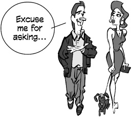

Hi!
Hello!
Hello there!
Howdy!
Hey!
Yo! (slang)
How are you?
How’s it going?
How is everything?
How’s everything?
How have you been?
How’ve you been?
How you been? (informal)
How’s tricks? (informal)
What have you been up to?
What’s new? (informal)
What’s up? (informal)
Wusup? / Wassup? (slang)
What’s happening? (slang)
What’s going on? (slang)
Good morning.
Morning.
Mornin’. (informal)
How are you this bright morning?
Good afternoon.
Afternoon.
Good evening.
Evening.
I haven’t seen you in years!
Long time no see! (informal)
I haven’t seen you in an age!
I haven’t seen you in a month
of Sundays!
a month of Sundays = a long time
Welcome back!
Welcome back, stranger!
Long time no see! (cliché)
Where were you?
Where have you been?
Where did you go?
What a surprise to meet you here!
Imagine meeting you here! (cliché)
Fancy meeting you here. (cliché)
Never thought I’d see you here!
What are you doing in this neck of the woods?
neck of the woods = part of town, location
What are you doing in this part of town?
What are you doing out of the office?
Where’ve you been hiding yourself?
What have you been up to?
Shouldn’t you be in school?
Shouldn’t you be at work?
Have you been keeping busy?
You been keeping busy?
Been keeping busy?
We seem to keep running into each other.
Haven’t we met before?
We have to stop meeting like this. (cliché)
Didn’t we meet at that party last week?
I’m sorry; I’ve forgotten your name.
I’ve been meaning to call you.

How was it?
How did it go?
Did everything go OK?
Did you have fun?
You’ll have to tell us all about it.
Did you take any pictures?
Do you have pictures?
Were the locals friendly?
Were the natives friendly?
Did you bring me anything?
We missed you.
We missed you around here.
We’ve missed you around here.
It just wasn’t the same without you.
Fine.
I’m fine.
I’m cool. (slang)
Keeping cool.
Dandy. (informal)
Fine and dandy.
Great.
Couldn’t be better.
Happy as a clam. (cliché)
Okay.
All right.
(I) can’t complain.
I have nothing to complain about.
Keeping busy.
Keeping myself busy.
Been keeping myself busy.
Keeping out of trouble.
Been keeping out of trouble.
Been up to no good. (informal)
Been keeping my nose clean. (informal)
Getting by.
Been getting by.
Fair to middling. (folksy)
So-so. (informal)
Plugging along. (informal)
Could be worse.
Could be better.
(Just) muddling through.
Same as always.
Same as usual.
Same o(l)’ same o(l)’ (informal)
Not good.
Not so good.
Not too good.
None too good.
Not well.
Not very well.
Not so well.
Not too well.
None too well.
Not so hot.
Not too hot.
None too hot.
Not great.
Not so great.
None too great.
Crummy. (slang)
Kind of crummy. (slang)
Lousy. (slang)
I’ve seen better days.
I’ve had better days.
Could be better.
I’ve been better.
I’ve been under the weather.
I’m busy.
Keeping busy.
Keeping myself busy.
Been keeping myself busy.
I’m swamped.
swamped = overwhelmed, as with a swamped boat
I’m snowed under.
snowed under = as if buried in snow
I don’t have time to breathe.
I don’t have time to think.
There aren’t enough hours in the day.
Not a moment to spare.
I’ve been running around with my head cut off. (informal)
I’ve been running around like a chicken with its head cut off.
(informal)
Do you have time for coffee?
How about a cup of coffee?
Let’s go get coffee. Do you have any time?
Let’s go for coffee.
Let’s go for a beer.
Let’s go for a drink.

I’d like you to meet my friend Mary.
I’d like you to meet Mary.
This is my friend Mary.
John, (this is) Mary. Mary, John.
Mary, have you met John?
Mary, do you know John?
Mary, shake hands with John Jones.
Do you two know each other?
Have you met?
Have you two been introduced?
Haven’t you been introduced?
Oh, I’m sorry; how silly of me. This is Mary.
Mary, John is the guy I was telling you about. (informal)
You two have a lot in common.
Good to meet you.
Nice to meet you.
Nice meeting you.
How nice to meet you. (formal)
How very nice to meet you. (formal)
What a pleasure to meet you. (formal)
It’s a pleasure to have finally met you. (formal)
I am pleased to make your acquaintance. (formal)
I’m happy to meet you.
I’m glad to meet you.
Glad to meet you.
Charmed. (formal)
A pleasure. (formal)
I’ve been wanting to meet you for some time.
John has told me all about you.
John has told me so much about you.
I’ve heard so much about you.
I’ve heard so much about you I feel I know you already.
So we finally meet face to face.
We’ve exchanged e-mails; it’s nice to meet in person.
I’m sorry, what was your name again?
I didn’t catch your name. I’m terrible at names.
How are you?
How’s your family?
How’s the family?
How are you doing?
How are you doing today?
How you doing?
Are you doing OK?
How are you feeling?
How you feeling?
Are you feeling better today?
How have you been?
How you been?
How’re things?
How’re things with you?
How’re things going?
How’s with you?
How’s by you? (slang)
How’s business?
How’s tricks? (slang)
How’s it shakin’? (slang)
How’s everything?
How’s every little thing? (folksy)
How’s everything going?
How’s it going?
How goes it?
How goes it with you?
How are you getting on?
How are you getting along?
How’s the world (been) treating you?
Oh, look at the time!
It’s getting later.
Well, David, it’s really good to see you, but I really must go.
It’s been fun talking to you.
(It’s been) nice chatting with you.
It’s so good to see you again.
We have to make plans to get together some time.
Let’s do lunch sometime.
I really have to go now. We’ll talk sometime.
There’s someone on the other line. I must say good-bye now.
The doorbell is ringing. I’ll call you back.
Can I call you back? Something has come up.
I have to get back to my work. I’ll call again later.
Can we continue this later? My other line is ringing.
I have to get back to work before the boss sees me.
I won’t keep you any longer.
I’ll let you go now.
I’m going to have to run.
Must run. (informal)
I’m all out of time. I’ll have to say good-bye now.
Look at the time. I really must go.
It’s been great talking to you, but I have to go.
Wow! I’m late. Look, I’ll call you.
Sorry, but I have to leave now.
Let’s continue this another time. I really must go.
Good-bye.
Bye.
Bye-bye.
So long.
Ta-ta. (informal)
Farewell.
Cheerio.

Adios. (Spanish)
Auf wiedersehen. (German)
Sayonara. (Japanese)
Arrivederci. (Italian)
Au revoir. (French)
Adieu. (French)
Ciao. (Italian)
Good day. (formal)
Good evening. (formal)
Good night.
Good-bye until later.
Good-bye until next time.
Good-bye for now.
See you later.
See you later, alligator. (slang)
Later, gator. (slang)
Later. (informal)
I’ll try to catch you later.
I’ll catch you later.
Catch you later.
I’ll talk to you soon.
Let’s get together soon.
I’ll be seeing you.
I’ll see you real soon.
See you.
See ya. (informal)
See you soon.
See you real soon.
See you around.
See you in a little while.
See you next year.
See you then.
See you tomorrow.
Good running into you.
running into you = meeting up with you
Nice running into you.
Nice talking to you.
Take care.
(It was) good to see you.
(It was) nice to see you.
Nice meeting you.
It was a pleasure meeting you. (formal)
It is a pleasure to have met you. (formal)
It’s been a real pleasure. (formal)

Are we ready to leave?
Are you about finished?
Are you ready to go?
Ready to go?
Ready to roll? (slang)
Are we away? (slang)
Let’s blow. (slang)
blow = leave
Let’s get out of this taco stand. (slang)
taco stand = a cheap place; an undesirable place
Let’s blow this joint. (slang)
= Let’s leave this place.
Let’s go while the going’s good. (cliché)
Let’s = Time to, We’ve got to
Let’s get while the getting’s good. (cliché)
Let’s head out.
Let’s beat a hasty retreat. (cliché)
Let’s make tracks. (informal)
make tracks = leave a trail (as we go)
to motor = to leave by automobile
Let’s hit the road. (slang)
Let’s boogie. (slang)
Let’s split. (slang)
Let’s make like a tree and leave. (jocular)
Let’s make like the wind and blow. (jocular)
Let’s make like a banana and split. (jocular)
Exit stage right.
Exit stage left.
Retreat! (slang)

Bon voyage!
Have a good trip!
Have a nice flight.
Have a nice trip.
Have a safe trip.
Have a safe journey.
Drive carefully.
Take care of yourself.
Take care.
We’ll miss you.
All the best.
I’ll call you when I get home.
Call when you get there.
Don’t forget to call.
Write me.
Let’s write.
You’ve got my e-mail address?
Text me.
Facebook = Twitter, MySpace, LinkedIn, etc.
Let’s do lunch.
I’ll be in touch.
Let’s keep in touch.

Yes.
Yeah. (informal)
Yep. (informal)
Yup. (informal)
Right.
You’re right.
Right you are.
Right on!
Right-o.
Uh-huh.
Sure.
Sure thing.
You got it.
You bet.
Absolutely.
By all means.
This is true.
That’s true.
You’re right.
Ain’t that the truth?
Ain’t it the truth?
That’s right.
That’s for certain.
That’s for sure.
That’s for darn sure.
That’s for damn sure. (mildly vulgar)
Damn straight! (mildly vulgar)
It works for me.
Well said.
I agree.
I agree with you 100 percent.
I couldn’t agree with you more.
I have no problem with that.
We see eye to eye on this.
I couldn’t have said it better.
You took the words right out of my mouth.
I’ll drink to that!
It’s fine.
I think it’s fine.
It’s good enough.
It’s satisfactory.
It’ll do.
It’ll serve the purpose.
I like it.
I love it.
I think it’s great.
I like the color.
I like the texture.
I like the flavor.
It’s got a good rhythm.
It’s wonderful.
It’s fabulous.
It’s ideal.
It’s a masterpiece.
It’s perfect.
It’s A-1.
This is second to none.
This is perfect.
This is far and away the best.
This is the ultimate.
It couldn’t be better.
Never been better.
There’s none better.
It doesn’t get any better than this.
I’ve never seen anything like it.
This is the cream of the crop. (cliché)
This is the pick of the litter. (idiomatic)
litter = a group of newborn pups
This is the crême de la crême. (cliché)
= This is the best of the best.
This is head and shoulders above the rest.
That suits me to a T.
= That suits me fine.
That’s the ticket. (idiomatic)
That’s just what the doctor ordered. (idiomatic)
That’s just what I needed.
That hits the spot. (idiomatic)
That fits the bill. (idiomatic)
That’s it.
That’s the greatest thing since sliced bread. (cliché)
It’s in a league of its own.
I give it four stars.
It gets two thumbs up. (idiomatic)
I’ve hit the jackpot.
jackpot = sum of money to be won in gambling
Bingo! (slang)
= I did it!
Jackpot! (slang)
= I did it!; It is good!
Bonus score! (slang)

I hear you.
I hear you, man.
I hear what you’re saying.
I see what you’re saying.
I can see what you’re saying.
I can see that.
I see what you mean.
I see where you’re coming from.
I know.
I know what you mean.
Point well taken.
I know what you’re talking about.
I understand what you’re saying.
Understood.
I dig it. (slang)
I can dig it. (slang)
I got you.
Gotcha.
(I) got it.
I follow you.
I’m with you.
I’m there with you.
I’ve been there.
Read you loud and clear.
Roger.
Roger, wilco.
wilco = will comply
Roger Dodger. (slang)

Do you know what I mean?
Do you know what I’m talking about?
Know what I mean?
Does that make any sense?
Am I making sense?
Are you following me?
Know what I’m saying?
You know?
Do you see what I mean?
See what I mean?
Don’t you see?
Do you get the message?
Do you get the picture?
Get the message?
Get the picture?
Get my drift?
Do you get it?
Get it?
Do you follow?
Do you follow me?
Dig? (slang)
= Do you understand?
Understand?
Do you understand?
Do you hear what I’m saying?
Do you hear me?
Do you see where I’m coming from?
where I’m coming from = what my position is
Do you agree?
You’re with me, right?
Are you with me on this?
Do we see eye to eye on this?
No.
Nope.
No way.
Not a chance.
Not! (slang)
Uh-uh.
I don’t think so.
That’s not true.
That’s not right.
You’ve got that wrong.
You’ve got it all wrong.
Wrong!
You missed the boat. (idiomatic)
You’re missing the boat. (idiomatic)
Wrong on both counts.
You’re wrong.
You’re dead wrong.
You’re off.
You’re way off base.
I disagree completely.
I couldn’t disagree (with you) more.
Horsefeathers! (slang)
Bullshit. (taboo)
That’s BS. (mildly vulgar)
Bull. (mildly vulgar)
Baloney. (slang)
That’s a load of crap. (mildly vulgar)
That’s a lot of bull. (mildly vulgar)
That’s a lot of baloney. (slang)
That’s a bunch of baloney. (slang)
That’s a bunch of malarkey. (slang)
Lies!
That’s a lie.
That’s a big, fat lie. (informal)
You’re lying through your teeth.
Look me in the eye and say that.
That’s out of the question.
That’s unthinkable.
That’s insane.
That doesn’t even merit a response.
I’ll give that all the consideration it’s due.
I can’t stand it.
I hate it.
I don’t care for it.
I don’t like it.
It’s not my style.
It’s not for me.
It stinks. (informal)
It sucks. (mildly vulgar)
It reeks. (informal)
My kid could do that.
It’s awful.
It’s terrible.
It’s ugly.
It’s hideous.
It’s dreadful.
It’s hell on earth. (informal)
I don’t get it.
Don’t quit your day job.

No.
Nope. (informal)
No way.
No way, José. (informal)
No can do. (informal)
No, sir.
No sirree. (folksy)
No sirree, Bob. (folksy)
Sorry.
Nothing doing.
You’re out of luck.
In a pig’s eye. (idiomatic)
When pigs fly. (idiomatic)
When hell freezes over. (informal)
There isn’t a snowball’s chance in hell. (informal)
Not a chance.
No chance.
Not if I can help it.
Not likely.
Not bloody likely. (mildly vulgar)
Absolutely not!
It will be a cold day in hell before I do that. (informal)
Only in your dreams.
Dream on.
Save your breath.
Save it.
You’re barking up the wrong tree. (idiomatic)
Over my dead body. (idiomatic)
Forget it.
If you think that, you’ve got another think coming.
Not for a million dollars.
You couldn’t pay me to do it.
Not in your wildest dreams.
You wish.
I’ll be damned first. (mildly vulgar)
I’ll be damned if I do. (mildly vulgar)
Damned if I will. (mildly vulgar)
Like hell. (mildly vulgar)
I’ll see you in hell first. (mildly vulgar)
What are you talking about?
You don’t know what you’re talking about.
You don’t have a leg to stand on.
You haven’t got a leg to stand on.
You don’t know the first thing about it.
You’re really stretching the truth.
You’re way off base.
You can lay that notion to rest.

You’ve got it all wrong.
You’ve got the facts wrong.
You’ve got your facts wrong.
You haven’t got the facts.
You haven’t got the facts right.
I don’t think you’ve got your facts straight.
Don’t speak until you’ve got your facts straight.
Next time get the facts straight. (informal)
Next time get the facts first. (informal)
Don’t jump to conclusions.
Pardon me. (formal)
Excuse me.
Hey! (informal)
Hey, you! (informal)
Yo! (slang)
Look here. (informal)
Listen here. (informal)
Listen up. (informal)
Get a load of this. (informal)
Now hear this! (informal)
Hear me out.
Are you ready for this? (informal)
Listen. (informal)
Are you listening to me?
Are you paying attention?
I’m talking to you.
Do you hear me?
Do I have your ear? (idiomatic)
Can I bend your ear a minute? (idiomatic)
Am I making myself heard?
Look at this.
Take a look at this.
Get a load of this.
Take a gander at that. (informal)
a gander = a look
Feast your eyes on this.
Look what we have here.
Lookie here. (informal)
Lookit. (slang)
Look here.
Can you eyeball this (for a minute)? (slang)
to eyeball = to look at
Can you believe your eyes?
I don’t believe my eyes.
Do my eyes deceive me?
That’s a sight for sore eyes.
I hear you.
I heard you.
I’m listening.
I’m still here.
I’m all ears.
Guess what?
Have you heard the latest?
Have you heard?
Did you hear what happened?
Did you hear the news?
Did you get the scoop? (informal)
the scoop = the most recent news
You’ll never guess what I heard.
You’ll never guess what I read online.
Guess what I just saw online.
Guess what I just found out.
You won’t believe this.
You won’t believe what Bill just told me.
Get a load of this. (informal)
a load = a sampling
Get this. (informal)
Dig this. (slang)
to dig = to understand

You got a minute?
Got a minute?
I need to talk.
Can we talk?
Can I talk to you?
May I have a word with you? (formal)
Let’s talk.
Let’s chew the fat. (slang)
Let’s shoot the breeze. (slang)
May I be frank?
Let me be perfectly clear.
Make no bones about it. (idiomatic)
= Do not make any bones of contention about this.
Read my lips. (informal)
= Pay close attention to what I am saying.
(To a make a) long story short. (cliché)
Let’s call a spade a spade. (cliché)
Let me spell it out for you.
the bottom line = the summation; the final and major point
What’s your point?
What’s the point?
What’s the upshot?
the upshot = the result
What’s the bottom line?
the bottom line = the summation; the final and major point
What are you trying to say?
What are you trying to tell me?
Get to the point.
Get to the heart of the matter.
Cut to the chase. (idiomatic)
= Switch to the focal point of something.
If I may.
= If I may interrupt.; If I may add some information.
Pardon my French.
= Pardon my use of vulgar words.
No pun intended.
= I intended to make no joke or play on words.
If you know what I mean.
= I assume you understand what I mean.
Know what I mean? (informal)
= Do you understand what I am saying?
You know what I’m saying?
= Do you understand what I am saying?
You know?
= Do you understand what I am saying?
= Is that not so?
OK?
= Is that not so?
Enough already. (informal)
Out with it! (informal)
= Say it!; Speak out!
Don’t mince words.
to mince = to cut up or disguise
Spare (me) nothing.
Lay it on the line. (informal)
Tell it to me like a man. (informal)
Give it to me straight. (informal)
straight = unadorned
Give it to me in plain English.
plain English = simple and direct terms
Don’t beat around the bush. (idiomatic)
Stop beating around the bush. (idiomatic)
Stop circumventing the issue.
Put your cards on the table. (idiomatic)
Stop speaking in circles.
What does that mean in English? (informal)
Cut the crap. (mildly vulgar)
crap = dung = needless talk
That’s beside the point.
That’s beside the question.
That’s not at issue.
That’s not the issue.
That’s irrelevant.
That has nothing to do with it.
That has nothing to do with what I’m talking about.
That’s another story.
That’s a whole ‘nother story. (folksy)
That’s a different ball of wax. (idiomatic)
ball of wax = thing; matter
That’s a different kettle of fish. (idiomatic)
kettle of fish = thing; matter
That’s another can of worms. (idiomatic)
can of worms = set of problems
That’s a horse of a different color. (idiomatic)
a horse of a different color = a different kind of problem altogether
You’re off on a tangent.
You’re getting off the subject.
As you were saying . . .
Getting back to the point . . .
But I digress. (formal)
Let me repeat myself.
Allow me to repeat myself. (formal)
At the risk of repeating myself . . .
As I’ve said . . .
As I am fond of saying . . .
To reiterate . . .
To repeat . . .
How many times do I have to tell you?
If I’ve told you once, I’ve told you a thousand times. (cliché)
If I’ve said it once, I’ve said it a million times. (cliché)
So you said.
Stop beating a dead horse.
beating a dead horse = continuing to argue a point that has been won
Stop harping on that subject.
harping on = dwelling on; talking about
You sound like a broken record. (idiomatic)
broken record = a grooved LP album with a scratch that makes the same track repeat endlessly
Must you belabor the point?
All right, already.
We get the point, already.
We heard you, already.
So it seems.
So it would seem.
Or so it would appear.
As it were.
So to speak.
In a manner of speaking.
I heard it through the grapevine.
the grapevine = a chain of rumors
I heard it on the grapevine.
A little bird told me. (cliché)
I have my sources.
I got it straight from the horse’s mouth. (idiomatic)
from the horse’s mouth = from the source
It’s common knowledge.
We live in a fishbowl. (informal)
= We are completely on display.; We are openly visible to everyone.
Word travels fast. (cliché)
News travels fast. (cliché)
Bad news travels fast. (cliché)
None of your business. (informal)
We have our ways (of finding these things out). (jocular)
I plead the fifth. (informal)
I’m taking the fifth. (informal)
the fifth = the Fifth Amendment to the U.S. Constitution, which protects against self-incrimination
I’m not one to kiss and tell. (cliché)
to kiss and tell = to do something secret and tell everyone about it

We’re very close.
We’re the closest of friends.
We’re the best of friends.
We’re best friends.
We’re pretty tight.
They’re bosom buddies.
She’s my best friend.
She’s my closest friend.
She’s a dear friend.
She’s like a sister to me.
He’s like the brother I never had.
We’re like brothers.
He’s one of a kind.
Sue’s one of a kind.
What a character!
They don’t make them like him anymore. (cliché)
After they made him, they broke the mold. (cliché)
We’re two of a kind.
They’re two of a kind.
We’re cut from the same cloth.
We’re made from the same mold.
We’re birds of a feather. (cliché)
We’re like two peas in a pod.

May I join you?
Is this stool taken?
Is this seat taken?
Do you care if I join you?
Care if I join you?
Do you mind if I join you?
Mind if I join you?
Care to join us?
Can I buy you a drink?
Could I buy you a drink?
Could I get you something to drink?
What are you drinking?
Do you know who does this song?
does = sings
Would you like to play darts?
Let’s play pool.
pool = billiards
Care to dance?
Would you like to dance?
You want to dance? (informal)
Could I have the next dance?
May I have the next dance? (formal)
That’s a pretty outfit. (male to female)
That’s a pretty dress. (male to female)
What’s shaking? (slang)
shaking = happening
Don’t I know you from somewhere?
Didn’t we go to high school together?
Haven’t I seen you here before?
Do you come here often?
What’s a nice girl like you doing in a place like this? (male to female, cliché)
Do you have a smoke?
a smoke = a cigarette
Do you have a light?
a light = a match or cigarette lighter
Do you have a cigarette?
Do you have change for the cigarette machine?
Would you like to go somewhere quieter?
Are you going my way?
Going my way? (cliché)
Could I give you a lift?
a lift = a ride
Need a lift?
Where have you been keeping yourself?
Where have you been all my life? (cliché)
Are you free Saturday evening?
Are you free Saturday night?
Are you busy on the 15th?
What are you up to this weekend?
What are you doing next weekend?
Would you like to go to dinner?
Would you like to go out to dinner with me?
I was wondering if you’d like to go out.
I was wondering if you’d like to see a movie.
If you’re not doing anything, would you like to go to a party with me?
If you don’t have other plans, would you like to go dancing?
I’m not interested.
I’m seeing someone else.
I have other plans.
I’ve got something going on.
Something suddenly came up.
I have to wash my hair.
My calendar is full.
You’re not my type.
Not if you were the last man on earth. (rude)
You must be joking. (rude)
I don’t feel up to it.
I have a headache.
Please. (with a disgusted tone of voice)
Let’s call it a day.
Let’s call it a night.
Let’s call it quits.
= Let’s quit (and leave).
Let’s get out of here.
Let’s get going.
Let’s go.
We should be on our way.
Let’s bid our farewell. (formal)
Let’s say our good-byes. (formal)
I’ll stand by you.
I’m standing behind you.
I am 100 percent behind you.
I’m with you.
I’m on your side.
I’ve got your back. (informal)
You’ve got my support.
You’ve got my backing.
You’ve got my vote.
You can count on me.
You can lean on me.
You can trust me.
You can put your trust in me.
You can put your faith in me.
If there’s anything I can do to help, please let me know.
Let me know if there’s anything I can do.
I’m here if you need me.
I’m here for you.
If you need me, call.
I’ll always be there for you.
I’ll go to bat for you.
to go to bat for you = to support you
I’ll take the rap. (slang)
the rap = the blame
I have faith in you.
I have the utmost faith in you.
I trust you completely.
I trust you implicitly.
I have faith in you.
I have confidence in you.

Go on; you can do it!
Just one more.
Just a little harder.
Hang in there.
Stick with it.
Stay at it.
Go for it.
Give it a try.
Give it a shot.
a shot = a try
Give it your best shot.
Give it your best.
Keep at it.
Keep your nose to the grindstone. (idiomatic)
= Keep bent over your work. = Keep working hard.
Hang in there. (informal)
Hang tough. (slang)
Stick it out. (informal)
Have a go at it.
a go = a try
Take a shot at it. (informal)
a shot = a try
Take a stab at it. (informal)
a stab = a try
Take a crack at it. (informal)
a crack = a try
Have a crack at it.
Take a whack at it. (informal)
a whack = a try
Come on. (informal)
It won’t hurt you to try it.
Everybody’s doing it.
Everyone else is doing it.
It’s all the rage.
the rage = the current fad
Try your luck.
See what you can do.
Nothing ventured, nothing gained. (cliché)
Go on.
Get going.
Get going already.
Get moving.
No pain, no gain. (cliché)
Get a move on. (informal)
Get cracking. (slang)
Get on the stick. (slang)
Get the lead out. (slang)
Get off your ass. (mildly vulgar)
Let’s see some action. (informal)
It’s now or never.
Take no prisoners! (informal)
Fish or cut bait! (idiomatic)
Knock yourself out. (idiomatic)
= Try really hard.; Work as hard as you can.
Go for broke. (informal)
= Risk everything.
I expect to see some results soon.
Are you just going to stand there all day?
Are you just going to sit there?
Aren’t you going to do anything?
Are you just going to sit there like a bump on a log? (informal)
a bump on a log = a motionless object
You’re letting the world pass you by.

That won’t do.
That won’t do it.
That doesn’t cut it. (idiomatic)
to cut it = to do what is needed
That doesn’t cut the mustard. (idiomatic)
to cut the mustard = to measure up to expectations
That doesn’t make the grade.
to make the grade = to qualify
Is that it?
It’s not up to snuff.
Is that all?
You call that finished?
Once more with feeling. (cliché)
Wait.
Wait a moment.
Wait a minute.
Wait a sec(ond).
Wait one moment.
Wait one minute.
Wait one sec(ond).
Wait it out.
Wait your turn.
Just a moment.
Just a minute.
Just a sec(ond).
Just one moment.
Just one minute.
Just one sec(ond).
Hold your horses. (idiomatic)
= Wait a bit.
Keep your pants on. (informal)
= Wait a bit.
Keep your shirt on. (informal)
= Wait a bit.
Take things as they come.
Take it as it comes.
Take it one day at a time.
Take things one day at a time.
Take one day at a time. Time will tell. (cliché)
= We will know more in time.
Rome wasn’t built in a day. (cliché)
= Big projects require a lot of time.
A watched pot never boils. (cliché)
= Paying constant attention to something you are waiting for will make the wait seem endless.
Good things come to him who waits. (cliché)
One step at a time.
One day at a time.
Good things come to those who wait. (cliché)
Patience is a virtue. (cliché)
In good time.
All in good time.
Everything in its time.
There’s a time for everything.
It will work out in the end.
Everything will come together.
Everything will fall together.
Everything will fall into place.
In the long run, everything will be OK. (informal)
In the long haul, it will all work out.
Everything will work itself out.
I am confident it will all work out.
It ain’t over till it’s over. (informal)
It ain’t over till the fat lady sings. (cliché)
= The opera is not over until the overweight opera singer has done her solo. = The event will not conclude until everything that was planned to happen has happened.
Don’t jump the gun.
to jump the gun = to start a race before the starting gun is fired = to do something too early
Don’t go off half-cocked.
half-cocked = ill-prepared
Don’t go chomping at the bit.
chomp = to bite (as with an eager horse)
Don’t put the cart before the horse.
Don’t count your chickens before they hatch.
= Don’t base your plans on something that hasn’t developed yet.
Don’t cross that bridge till you come to it.
= We will deal with that when the time comes.
We’ll cross that bridge when we come to it.
Don’t get ahead of yourself.
You can’t please everybody. (cliché)
You can’t be all things to all people. (cliché)
You’ve got your fingers in too many pies. (idiomatic)
You’ve got your irons in too many fires. (idiomatic)
You’re burning the candle at both ends. (cliché)
You’re taking too many things on.
You’re taking on too much.
You’re doing too much.
You’re trying to do too much.
You’re overcommitted.
You’re overdoing it.
You’re carrying the world on your shoulders.
You need to set your priorities.

Take care of it.
Take good care of it.
I’m trusting you to take good care of it.
Keep an eye on it.
Guard it with your life.
Don’t let it out of your sight.
I want this back.
I want it back in one piece.
in one piece = unbroken; unharmed
Bring it back in one piece.
Just between you and me . . .
Just between you, me, and the lamppost . . .
This is between you, me, and the bedpost.
This is between you, me, and the four walls.
I’m telling you this in confidence.
I’m telling you this in strict con?dence.
I’m telling you this in strictest confidence.
Can you keep a secret?
Don’t repeat this, but . . .
Don’t let this get around, but . . .
Could you keep a secret?
Confidentially . . .
Better keep quiet about it.
Better keep still about it.
Keep it to yourself.
Don’t breathe a word of this to anyone.
Don’t breathe a word of it.
Don’t let it out of this room.
it = the secret
Don’t let this go any further.
Don’t tell a soul.
a soul = a person
Mum’s the word.
mum = a word referring to a closed mouth
It’s on the QT. (slang)
QT = quiet
Play dumb.
This is top secret.
This is for your eyes only.
This is for your ears only.
Don’t say I told you.
Don’t say who told you.
This is off the record.
off the record = not to be reported or quoted
This is not for the record.
This is not to be quoted.
This is not for public knowledge.
This is not for publication.
I won’t tell a soul.
a soul = a person
My lips are sealed. (cliché)
It won’t leave this room.
Wild horses couldn’t drag it out of me. (cliché)
I’ll take it to my grave.
= I’ll die without telling the secret to anyone.

Where was I?
= What was I saying?
What was I saying?
What were we talking about?
I don’t remember.
I have a mind like a sieve.
a sieve = a strainer or colander
I’m a little absentminded.
absentminded = forgetful
I’d lose my head if it weren’t attached. (informal)
I’ve lost my train of thought.
train of thought = sequence of thoughts
It’s at the tip of my tongue.
= It is about ready to be said.
It’s on the tip of my tongue.
It’s slipped my mind.
The thought escapes me.
It’s left my head.
What was your name again?
What did you just say?
It went in one ear and out the other. (cliché)
Are we supposed to be someplace right now?
I’m in trouble.
I’m in big trouble.
I’m in deep trouble.
I’m in deep.
I’m in over my head.
I’m in way over my head.
I’m behind the eight ball. (idiomatic)
= I’m in trouble with someone.
My ass is in a sling. (mildly vulgar)
in a sling = injured = at risk
My ass is on the line. (mildly vulgar)
on the line = at risk
My neck is on the line.
My job is on the line.
My reputation is on the line.
My reputation is at stake.
at stake = at risk
Your goose is cooked. (idiomatic)
= You are in trouble.
You’ve really screwed up. (informal)
You’ve done it now.
Now you’ve done it.
You’ve really done it this time.
You’re in for it.
You’re gonna get it. (informal)
How could you do something so stupid?
What kind of mess did you get yourself into?
That’s another fine mess you’ve gotten us into. (informal)
How are you going to dig yourself out of this one?
How are you going to get out of this one?
You’ve made your bed; now lie in it.
= You have created this situation, so you must endure it.
You’re up the creek without a paddle. (informal)
You’re up a creek. (informal)
You’re up the creek. (informal)
I’m broke.
broke = without any money
I’m dead broke.
I’m flat broke.
I’m flatter than a pancake. (informal)
flatter than a pancake = as flat broke as is possible
I don’t have a dollar to my name.
to my name = in my ownership
I don’t have a penny to my name.
I don’t have a cent to my name.
I don’t have a red cent. (informal)
red cent = a copper penny
I’m busted. (slang)
busted = without any money
I’m as poor as a church mouse. (idiomatic)
My pockets are empty.
I have empty pockets.
All I have is the shirt on my back.
the shirt on my back = the clothes that you see me in
I’ve got nothing but the shirt on my back.
All I have is my good name.
my good name = my reputation
I don’t know where my next meal is coming from.
I’ve lost everything.
I’m bankrupt.
I’m in the red.
red = red ink = indebtedness
She’s in over her head (in debt). (idiomatic)
I’m up to my ears in debt. (idiomatic)
Bill’s writing rubber checks.
a rubber check = a bad check (that bounces back from the bank because there is no money to pay it)
I’m borrowing from Peter to pay Paul. (idiomatic)
I’m robbing Peter to pay Paul. (idiomatic)
I’m going nuts. (slang)
nuts = crazy
I’m going crazy.
I’m losing my mind. I’m losing my marbles. (informal)
losing my marbles = losing my intellect
I’m freaking out. (slang)
I’m spazzing out. (slang)
I’m mad at the world.
I need a break.
I need some sleep.
I’m going to explode.
My head is going to explode.
Everything is getting on my nerves.
I can’t take it anymore.
I can’t take another problem.
I can’t deal with this anymore.
I’m on pins and needles. (idiomatic)
on pins and needles = in anxious anticipation
I’m on tenterhooks.
tenterhooks = a type of sharp nail used for fastening fabric
I’m a bundle of nerves.
I’ve got butterflies in my stomach. (idiomatic)
= My stomach is feeling like it is fluttering.
I’m coming apart at the seams.
I’m falling apart at the seams.
I’m burning the candle at both ends. (cliché)
I scarcely have time to breathe.
I have no time to call my own.

Calm down.
Simmer down.
Control yourself. (informal)
Don’t go into hysterics.
Don’t be such a worrywart.
a worrywart = a person who worries a lot
Don’t worry yourself sick.
Don’t lose sleep over it.
Don’t let it get to you.
Don’t trouble yourself.
You’ll send yourself to an early grave.
an early grave = an early death
Don’t get all bent out of shape!
Don’t get your nose out of joint!
Learn to roll with the punches.
I didn’t mean any harm.
Pull yourself together.
Don’t get excited.
Don’t get all excited.
Don’t get all worked up.
Don’t blow your stack. (slang)
to blow your stack = to lose your temper; to go crazy
Don’t lose your cool. (slang)
Don’t blow your cool. (slang)
Don’t blow a gasket. (slang)
Don’t go into hysterics.
Don’t go into hysterics on me.
Don’t fly off the handle.
Don’t pop your cork. (slang)
to pop your cork = to go crazy
Don’t work yourself into a tizzy. (informal)
a tizzy = a dizzy, confused state
Don’t run around like a chicken with its head cut off. (informal)
Restrain yourself.
Would you restrain yourself?
Get a grip (on yourself). (informal)
Would you get a grip? (informal)
Mellow out. (slang)
= Adopt a calm attitude.
Chill out. (slang)
Chill. (slang)
Keep cool. (slang)
Cool it. (slang)
Cool your jets. (slang)
Cool off. (informal)
Cool down. (informal)
Slow down.
Simmer down.
Calm down.
Be calm.
Calm yourself.
Relax. Deal with it. (informal)
Hold your horses. (cliché)
Keep your shirt on. (informal)
Keep your pants on. (informal)
Take a deep breath.
Take it easy.
Take it slow.
Take a tranquilizer! (informal)
Take a pill! (informal)
Don’t have a cow!
Don’t have a conniption fit.
Don’t throw a fit.
Don’t have a fit.
Give it a break.
Give it a rest.
You got ants in your pants?
You’re as cold as ice.
You’re a cold fish.
You’re cold-blooded.
You’ve got a heart of stone.
You’re heartless.
You’re thick-skinned.
Have you no qualms?
Have you no scruples?
Have you no conscience?
Have you no thought for anyone but yourself?
Think before you speak.
Think before you act.
Try putting yourself in my shoes.
= Think what it is like to be in my situation.
This is a nonsmoking area.
This is a nonsmoking building.
You’ll have to step outside.
Please observe the no-smoking signs. (formal)
Can you put that out?
Please put that out.
I’m sorry, you’ll have to put that out.
I’m sorry, the smoke is bothering me.
Have you ever thought of quitting?
It’s your funeral. (informal)
You smoke like a chimney. (informal)
Mind your own business.
Go to a nonsmoking area.
I can’t quit.
I tried quitting.
I have no intention of quitting.
Sorry.

Got a match?
You got a lighter?
Can I bum a light?
to bum = to beg
Can I bum a cigarette off you?
Can I have a drag?
a drag = a puff of smoke
Where is the smoking room?
Where can you smoke around here?
Do you mind if I smoke?
You’re clueless. (informal)
You’re without a clue. (informal)
You wouldn’t know the truth if it jumped up and bit you on the nose. (jocular)
She doesn’t know nothing. (informal)
You don’t know beans. (informal)
You don’t know up from down. (informal)
You don’t know which end is up. (informal)
You don’t know your ass from your elbow. (vulgar)
You don’t know your ass from a hole in the ground. (vulgar)
You don’t know quality from a hole in the ground. (informal)
quality = art, value, truth, engines, etc.
Don’t you know anything?
How can you be so stupid? (informal)
Get your head out of the sand. (idiomatic)
That ain’t the way I heard it. (folksy)
Let me set you straight.
You’re off your rocker. (informal)
You’re out of your mind. (informal)
He’s two bricks shy of a load. (slang)
You’re out of your tree. (slang)
You’re out of your head. (informal)
She’s out of her skull. (informal)
You’ve lost your marbles. (informal)
You’re crazy. (informal)
You’re nuts. (informal)
They can’t be serious.
You’re a few cards shy of a full deck. (idiomatic)
You’re a few cards short of a deck. (idiomatic)
You aren’t playing with a full deck. (idiomatic)
You’re one sandwich short of a picnic. (idiomatic)
Your front porch light is out.
You’ve gone over the edge.
You’ve gone off the deep end.
You’re nutty as a fruitcake. (cliché)
Are you crazy?
Is he nuts? (slang)
nuts = crazy
Are you psychotic, or what?
Are you out of your mind?
Are you out of your head?
Are you out of your gourd? (informal)
gourd = head
Are you out of your skull? (informal)
Are you out of your tree? (slang)
Are you out of it?
Have you gone crazy?
Have you gone insane?
Have you gone mad?
Have you gone stark raving mad?
Have you gone loco? (informal)
loco (Spanish) = crazy
Have you gone plumb loco? (informal)
plumb loco = completely crazy
Have you lost your mind?
Have you lost your senses?
Have you lost your marbles?
Have you wigged out? (slang)
Have you completely flipped out? (slang)
Have you flipped your lid? (slang)
Have you completely lost it? (informal)
Have you completely lost touch with reality?
Have you taken leave of your senses?
Do you have a screw loose? (slang)
What planet are you from?
Do you have rocks in your head? (informal)
Do you have bats in your belfry? (slang)
Are there bats in your belfry? (slang)
Are you playing with a full deck? (slang)
Hello? (informal)
What are you thinking?
What’s your deal? (informal)
What’s your problem? (informal)
What ([kind of] drugs) are you on? (informal)
What have you been smoking? (informal)
Where’s your head? (informal)
What’s with you? (informal)
Are you serious?
What planet are you on? (informal)
Earth to Bill. (informal)
Get a life! (informal)
Get real!
Snap out of it. Get with the program. (informal)
Come back to earth. (informal)
Truly?
Really?
For real? (informal)
No kidding?
No fooling? (informal)
No lie? (informal)
No way! (informal)
Are you serious?
Are you for real? (informal)
Are you pulling my leg?
Are you bullshitting me? (mildly vulgar)
You’re not making this up, are you?
You’re making this up, aren’t you?
You’re not trying to pull one over on me, are you?
Unbelievable!
Get out of town!
You’re kidding!
You’ve got to be kidding!
You’ve got to be kidding me!
Stop it! (informal)
Get out of here! (informal)
I can’t believe it!
Do you expect me to believe that?
That blows my mind. (informal)

What do you mean?
What are you saying?
What are you trying to get at?
What are you getting at?
Do you mean to tell me?
What’s the bottom line?
This all boils down to what? (idiomatic)
How so?
So what’s the upshot?
What’s the point?
I didn’t get that.
I didn’t hear you.
Cut to the chase. (idiomatic)
I don’t see what you’re getting at.
I don’t get it.
I don’t follow you.
I don’t follow.
I’m not sure I get your point.
I’m not sure I know what you mean.
That’s not what I meant.
That’s not what I said.
I didn’t mean that.
I didn’t say that.
I said no such thing.
I didn’t mean to give you that impression.
I didn’t mean to imply that.
Listen to me.
Open your ears. (informal)
Get the wax out of your ears. (informal)
You’re not listening to what I’m saying.
You’re only hearing what you want to hear.
You’re missing the point.
That’s not my point.
That’s not the point I’m trying to make.
You’ve got it wrong.
You’ve got it all wrong.
You’ve got me wrong.
You’ve twisted my words.
You’re putting words in my mouth.
You’re quoting me out of context.
You’re taking it out of context.
You’re blowing it out of proportion.
You’re blowing this all out of proportion.
Let me rephrase that.
Let me clarify that.
Allow me to clarify.
Let me make myself clear.
Let me make myself perfectly clear.

Honest.
Honestly.
Truly.
True.
That’s the truth.
That’s the honest truth.
That’s the honest-to-goodness truth.
Honest to goodness.
That’s the truth, the whole truth, and nothing but the truth.
Cross my heart and hope to die. (juvenile)
Would I lie?
Would I lie to you?
Why would I lie?
I swear.
I swear to you.
I swear on a stack of Bibles. (mild oath)
I swear on my mother’s grave. (informal)
I swear to God. (mild oath)
May God strike me down if I am not telling you the truth.) mild oath)
That’s the gospel truth. (informal)
Take my word for it.
You have my word.
You have my word on this.
I give you my word.
I give you my word of honor.
On my honor.
Scout’s honor. (juvenile)
You can count on it.
You can bank on it.
You can take it to the bank.
You better believe it.
You had better believe it.
Believe you me.
Trust me.
Don’t be such a doubting Th omas.
It’s cinched.
It’s locked up.
It’s sewn up.
It’s a sure thing.
It’s for sure.
It’s certain.
It’s in the bag.
It’s a done deal.
It’s as good as done.
Nothing can go wrong.
What can go wrong?
All’s well that ends well. (cliché)
That’s that. What’s to go wrong?
It’s going to happen.
There’s no doubt in my mind.
There’s not a doubt in my mind.
It’s as plain as day.
It’s as clear as day.
It’s as plain as the nose on your face. (jocular)
Do I need to paint you a picture? (informal)
Must I paint you a picture? (informal)
That goes without saying.
Any fool can see it. (informal)

I find that hard to believe.
Unbelievable.
I find that hard to swallow.
I’ll take that with a grain of salt. (cliché)
I remain skeptical.
I’ll believe it when I see it.
You can’t fool me.
You can’t pull the wool over my eyes.
I wasn’t born yesterday.
Dunno. (informal)
I don’t know.
I don’t know and I don’t care.
I don’t have a clue.
I haven’t a clue.
I’m clueless.
I don’t have the faintest idea.
I haven’t the faintest idea.
I haven’t the vaguest notion.
I don’t have the foggiest notion.
Haven’t the foggiest.
Beats me. (informal)
Beats the heck out of me. (informal)
Beats the hell out of me. (mildly vulgar)
Got me beat. (informal)
You got me (there).
Got me stumped. (informal)
Got me.
How would I know?
How should I know?
How the hell should I know? (mildly vulgar)
Like I would know. (informal)
Like I would know? (informal)
I give up. (informal)
Search me. (informal)
Who knows?
Lord knows. (mild oath)
God only knows. (mild oath)
I’m afraid not.
‘Fraid not.
I’m afraid so.
‘Fraid so.
If I must. (formal)
Well, if I have to.
Well, if you insist.
Well, if you really think so.
Well, if you really want me to.
I guess I have no choice in the matter.
It doesn’t sound like I have a choice.
We’ve got no choice.
We have no alternative.
There’s no alternative.
I’d rather not.
I’d rather die.
I’d sooner die.
Not in a million years.
Over my dead body. (informal)

That’s life.
That’s the way life is.
That’s how it goes.
That’s the way it goes.
That’s the way the ball bounces. (cliché)
That’s the way the cookie crumbles. (cliché)
Things could be worse.
It’s not as bad as all that.
Look on the bright(er) side. (cliché)
Make the best of it.
Half a loaf is better than none. (cliché)
It’s always darkest before dawn. (cliché)
Every cloud has a silver lining. (cliché)
When life hands you lemons, make lemonade. (cliché)
It’s the best we can do under the circumstances.
I wish we could do more.
You did the best you could.
You did the best that could be expected.
You get an A for effort.
The important thing is that you tried.
Winning isn’t everything. (cliché)
You can’t win them all. (cliché)
It’s not whether you win or lose, it’s how you play the game. (cliché)
You made a noble effort.
Truth is stranger than fiction. (cliché)
It was just one of those things. (cliché)
(Don’t ask why;) it just is.
Why ask why? (informal)
Who am I to question?
It’s for the best. (cliché)
It’s all for the best. (cliché)
When God closes a door, He opens a window. (cliché)
Don’t let it get you down.
Keep your chin up! (cliché)
Chin up!
Cheer up!
Keep a stiff upper lip. (cliché)
Grin and bear it. (cliché)
Grit your teeth. (cliché)
Take it in stride. (cliché)
Roll with the punches. (cliché)
Accept your fate.
You’ve made your bed; now lie in it. (cliché)
If at first you don’t succeed, try, try again. (cliché)
The important thing is to learn from your mistakes.
The third time’s the charm. (cliché)
I’m between a rock and a hard place. (cliché)
I’m between the devil and the deep blue sea. (cliché)
I’m damned if I do and damned if I don’t. (mildly vulgar)
You’re damned if you do and damned if you don’t. (mildly vulgar)

It was destiny.
It was destined to happen.
It’s your fate.
It was fated to happen.
It’s fate.
It’s in the cards.
It’s in the stars.
It’s the cruel hand of fate.
That’s karma.
It’s God’s will.
It’s all in God’s plan.
It was meant to be.
= Whatever will be, will be.
What will be, will be.
Whatever will be, will be.
Don’t fight it.
You can’t fight it.
You can’t fight City Hall.
There’s nothing you can do about it.
You have to play the hand life deals you.
You’ve got to play the hand you’re dealt.
I should have known.
I should have known better.
If I (only) knew then what I know now . . .
If I (just) knew then what I know now . . .
If I’d known then what I know now . . .
If only I could turn back the hands of time.
If I could only turn back the clock.
It’s easy to be wise after the event.
That’s easy to say in hindsight.
Hindsight is 20/20.
20/20 = good vision in each eye at twenty feet = hindsight
I don’t care.
I couldn’t care less.
I could care less. (informal)
I don’t give a damn. (mildly vulgar)
Like I give a damn. (mildly vulgar)
It doesn’t matter to me.
Really doesn’t matter to me.
Makes no difference to me.
Makes me no difference. (informal)
Makes me no nevermind. (folksy)
Makes no nevermind to me. (folksy)
Either way.
Whichever.
Whatever.
Six of one, half (a) dozen of the other. (informal)
Up to you.
Whatever you prefer.
It’s not important.
I guess so.
I guess.

Excuse me . . .
Pardon me . . .
Excuse me for asking . . .
If you don’t mind my asking . . .
It’s none of my business, but . . .
If I may say so . . .
If I may be so bold . . .
If it’s okay with you . . .
If it pleases you . . .
Please be advised that . . .
For your information . . .
It is a pleasure to inform you that . . .
We regret to inform you that . . .
As you are aware . . .
As you are no doubt aware . . .
As you know . . .
As you might know . . .
As you may already know . . .

(To make a) long story short . . .
What I would like to say is . . .
But I just wanted to say . . .
By the way . . .
If you ask me . . .
Not that it’s any of my business . . .
As you requested . . .
For your convenience . . .
We apologize for the inconvenience . . .
With your safety in mind . . .
With your comfort in mind . . .
Do you speak French?
French = Spanish, German, Russian, Italian, etc.
Do you know any French?
Do you speak any French?
I’m sorry. I don’t understand.
I’m sorry. I don’t speak French.
French = Spanish, German, Russian, Italian, etc.
I’m sorry. My French isn’t very good.
I only speak a little French.
Pardon me?
Excuse me?
Again, (please). I’m sorry?
I’m sorry. I missed that.
missed that = failed to hear what was said
I didn’t quite get that.
to get that = to hear or understand what was said
What did you say?
I’m sorry. What?
What?
What was that?
Come again. (folksy)
Huh? (informal or rude)
Could you please repeat yourself?
Could you please repeat that?
I don’t understand you.
I can’t understand you.
I can’t hear you.
Please speak more slowly.
Could you please speak slower?
Could you please speak louder?
Could you write it down, please?
Could you spell that?
What time is it?
Could you tell me what time it is?
Could you please tell me the time?
Could you give me the time?
Do you know what time it is?
Do you know the time?
Do you happen to have the time?
Do you have the correct time?
Do you have the time?
Could I bother you for the time?
It’s twelve noon.
It’s noon.
It’s twelve midnight.
It’s midnight.
It’s three.
It’s three o’clock.
It’s three o’clock sharp.
It’s three o’clock on the dot.
It’s three o’clock on the nose. (informal)
It’s exactly three o’clock.
It’s almost three.
It’s not quite three.
It’s just after three.

It’s ten after three.
It’s ten after.
It’s ten minutes after three.
It’s ten past three.
It’s ten past.
It’s three fifteen.
It’s a quarter past three.
It’s three thirty.
It’s half past three.
It’s half past.
It’s three forty.
It’s twenty of four.
It’s twenty to four.
It’s twenty till four.
It’s twenty minutes till four.
It’s three forty-five.
It’s quarter to four.
It’s a quarter of four.
It’s quarter to.
It’s a quarter till.
It’s a quarter till four.
It’s ten minutes to four.
It’s ten to four.
It’s ten to.
It’s ten of.
It’s ten till.
Is this clock right?
I think my watch needs a new battery.
This clock is fast.
This clock is slow.
My watch is running fast.
My watch has been running slow.
Excuse me.
Pardon me.
Coming through.
I beg your pardon.
Could I get by, please?
Watch your feet!
After you.
Ladies first.
You first.
Age before beauty. (jocular cliché)
Be my guest.
I’m sorry.
Forgive me.
Sorry to be a bother.
Sorry to be a pest.
Sorry for the inconvenience.
Please forgive the inconvenience.
Same to you.
Likewise.
Likewise, I’m sure. (cliché)
Th ank you.
Of course.
Be happy to.
Fine.
Great. Super. (slang)
I’ll be there in just a moment.
Be there in a minute.
I’ll be with you in a moment.
Could I be excused?
May I be excused?
Might I be excused? (formal)
Good afternoon.
Good evening.
Good morning.
Good day.
Good night.
Have a nice day.
Good-bye.
Bye.
Bye-bye.
Farewell.
Good-bye until later.
Good-bye until next time.
Good-bye for now.

So long.
Ta-ta.
Farewell.
Cheerio.
See you later.
See you later, alligator. (slang)
Later, gator. (slang)
I’ll try to catch you later.
I’ll catch you later.
Catch you later.
See you.
See ya.
See you around.
Take care.
Mr. Smith to see Dr. Jones.
I’m here to see Mrs. Hodges.
Could you please tell Mr. Smith I’m here?
I have an appointment with Mrs. Jones.

I’d like my check now, please.
I’d like my payment now, please.
No, I don’t think so.
= I totally reject your assertion.
Excuse me?
= Did you really say what I think you said?
May I have your name, please?
I’d like to speak to the manager.
I’d like to speak to your supervisor.
I intend to stand my ground.
I’m not leaving until I’m satisfied.

Sorry.
So sorry.
I’m (so) very sorry.
I’m (so) sorry.
I’m really sorry.
I’m terribly sorry.
I’m sincerely sorry.
I apologize.
My apologies. (formal)
My sincere apologies. (formal)
You have my sincere apology. (formal)
Please accept my apology.
Please accept my apologies.
Please accept my heartfelt apology.
I offer my most sincere apology. (formal)
You cannot believe how sorry I am.
Words cannot describe how sorry I am.
I am just mortified.
Please send me the bill, and I’ll take care of it.
It’s my fault.
It’s all my fault.
I’m fully responsible.
I take full responsibility.
I take the blame.
I blame no one but myself.
= I am guilty.
Maxima culpa. (Latin)
= I am completely guilty.
My mistake.
I shouldn’t have said that.
I shouldn’t have done that.
I should have asked you first.
I didn’t mean it.
I honestly didn’t mean it.
I didn’t mean it, honest.
I didn’t mean to do it.
I didn’t mean to do that.
I didn’t mean to say that.
I didn’t mean it that way.
I didn’t intend it that way.
I don’t know how that could have happened.
It won’t happen again.
It will never happen again.
I’ll see (to it) that it never happens again.
I won’t do it again.
How can I make it up to you?
How can I ever make it up to you?
Is there anything I can do (to make it up to you)?
I promise I’ll make it up to you.
Please forgive me.
Can you forgive me?
Can you ever forgive me?
Can you find it in your heart to forgive me?
How can you ever forgive me?
I ask your forgiveness.
I beg your forgiveness. (formal)
I throw myself upon your mercy. (formal)
I ask for your mercy. (formal)
I forgive you.
You’re forgiven.
All is forgiven.
That’s all right.
It’s okay. (informal)
That’s okay. (informal)
Don’t worry about it.
Think on it no more. (formal)
Think of it no more. (formal)
Think no more of it. (formal)
Don’t give it another thought.
To err is human, to forgive divine. (cliché)
Forget it.
Forget about it.
Forgive and forget.
Write it off.
I’ll let you off this time.
I’ll let it slide this time.
I’ll give you another chance.
I’ll turn the other cheek.
I won’t hold it against you.
Let’s drop the subject.
Let’s bury the hatchet. (idiomatic)
Let’s bring this matter to a close.
It’s time to kiss and make up. (cliché)
Th ank you.
Thank you very much.
Thank you so much.
Thank you for your help.
Thank you for all you’ve done.
Thank you for everything.
You have my thanks.
You have my gratitude.
I’m deeply grateful.
I’m in your debt.
I’m indebted to you.
Thanks ever so much.
Thanks very much.
Thanks.
Thanks much.
Thanks for everything.
Thanks so much.
Thanks a lot.
Thanks a million.
Thanks a bunch.
Thanks a bundle.
Thanks heaps.
I owe you one.
I owe you big.
I owe you big-time.

You’re welcome.
You’re most welcome.
You’re entirely welcome.
My pleasure.
It was my pleasure.
The pleasure was mine.
The pleasure was all mine.
The pleasure was entirely mine.
It was nothing.
Don’t mention it.
No problem.
No sweat. (slang)
No trouble.
No skin off my nose.
No skin off my teeth.
No skin off my back.

Oh, isn’t he cute!
Isn’t he the sweetest thing!
Oh, isn’t she darling!
She’s beautiful.
She’s so big!
What an adorable baby!
His eyes are just like his father’s.
Her nose looks just like her mother’s.
She has her father’s eyes.
He’s got his mother’s nose.
How much does he weigh?
Was he early?
Was she late?
What’s his name?
Who is she named after?
Has he been sleeping well?
Is she sleeping through the night?
Does he sleep through the night yet?
Can I hold her?
May I hold him?
Congratulations!
Good going!
Good job!
Good work!
Bravo!
Happy Birthday!
. . . and many (many) more!
Many happy returns!
Happy Anniversary!
Congratulations!
Good luck!
Best wishes!
All our best!
Bon voyage! (French)
(said when someone is leaving on a sea voyage)
Have a good time!
Have a good trip!
I’m sorry.
I’m so sorry.
I’m so sorry for your loss.
I’m very sorry.
You have my sympathy.
You have my deepest sympathy. (formal)
Please accept my sympathy. (formal)
My heart goes out to you.
I share your sorrow.
I share your pain.
How are you doing?
If you need anything, please let us know.
If there’s anything we can do for you, please let us know.
Our thoughts are with you.
You’re in our prayers.
We’ll keep you in our prayers.

You’re so vain.
You’re too big for your britches. (informal)
britches = trousers
You’re getting a little big for your britches. (informal)
Aren’t you getting a little big for your britches? (informal)
You’re so full of yourself. (idiomatic)
You think you’re pretty smart, don’t you? (informal)
You think you’re so smart. (informal)
You think you’re so big. (informal)
You think you’re such a big shot. (informal)
a big shot = an important person
You love the sound of your own voice. (informal)
You just like to hear yourself talk. (informal)
You talk just to hear yourself speak. (informal)
You think the world revolves around you.
The world doesn’t revolve around you.
You think you’re the center of the universe.
You’re all wrapped up in yourself.
All you think about is yourself.
Did you ever stop to think about anyone else?

Who died and made you king? (informal)
Who died and made you Pope? (informal)
Who died and made you God? (informal)
Smarty. (informal)
Smart-ass. (mildly vulgar)
Smarty pants. (slang)
Know-it-all. (informal)
Get off your high horse. (informal)
= Be less arrogant.
Who do you think you are?
You think you’re so smart? (informal)
You and who else? (informal)
You and what army? (slang)
What makes you so special? (informal)
Don’t break your arm patting yourself on the back. (idiomatic)
You think you’re so hot. (informal)
hot = important
You think you’re such hot stuff. (informal)
hot stuff = someone or something important
The nerve of you!
nerve = impudence; brashness
What nerve you have!
You have a lot of nerve!
You’ve got a lot of nerve!
Th e nerve!
You have a lot of gall!
gall = nerve
Th e gall!
The very idea!
How dare you!
How could you say such a thing?
How could you do such a thing?
I beg your pardon!
Don’t get smart with me!
Don’t get sassy with me. (folksy)
sassy = insolent
Don’t sass me. (folksy)
Don’t talk back to me.
Don’t give me any of your lip. (informal)
lip = insolent talk
Don’t get uppity on me. (folksy)
uppity = arrogant
Don’t get uppity with me. (folksy)
Don’t get cocky. (informal)
cocky = insolent
Don’t get fresh. (informal)
fresh = insolent; impudent
Don’t get your nose out of joint. (informal)
Don’t overstep your bounds.
Watch yourself.
Watch it. (informal)
Watch out. (informal)
Oh, a smart aleck? (informal)
a smart aleck = an insolent person
Oh, a wiseguy? (slang)
a wiseguy = a smart aleck
Oh, a wiseacre? (slang)
a wiseacre = a smart aleck
Oh, a smart-ass? (mildly vulgar)
a smart-ass = a smart aleck
Oh, a smart mouth? (slang)
a smart mouth = an impudent-talking smart aleck
Wiseguy. (slang)
Wiseacre. (slang)
Smart aleck. (informal)
Smart-ass. (mildly vulgar)
Wipe that grin off your face. (informal)
Wipe that smirk off your face. (informal)
Show a little resolve.
Show some courage.
Show some spine.
Don’t be so spineless.
Don’t be such a chicken-shit. (taboo)
a chicken-shit = a coward
Don’t be such a lily-liver. (informal)
a lily-liver = a coward
Chicken! (slang)
= Coward!
Wimp! (slang)
= Coward!
Wuss! (slang)
= Coward!
Fraidy-cat! (juvenile)
a fraidy-cat = a coward
Scaredy-cat! (juvenile)
a scaredy-cat = a coward
You’re yellow. (informal)
yellow = cowardly
You yellow-bellied sapsucker. (informal)
= You coward.
You are a gutless wonder. (slang)
gutless = cowardly
You’re afraid of your own shadow. (informal)
Are you a man or a mouse? (cliché)
Cat got your tongue? (cliché)
= Are you afraid or unable to speak?
Got cold feet?
= Are you too frightened to act?
You really wimped out. (slang)
wimped out = withdrew in a cowardly fashion
You really chickened out. (slang)
chickened out = withdrew in a cowardly fashion
Lose your nerve?
= Did you lose your resolve?
Don’t contradict me.
You see everything in black and white.
in black and white = in simple yes-no terms
If I said it was black, you’d say it was white.
That’s as different as day and night.
It’s (the difference between) apples and oranges.
You’re just being contrary.
You’re just disagreeing to disagree.
You’re just disagreeing for the sake of disagreeing.
You’re just playing the devil’s advocate.
You’re just arguing for the sake of arguing.
You just like to hear yourself talk.
Would you stop that?
Could you please stop doing that?
You are really trying my patience.
That’s really annoying.
That’s really irritating.
That’s driving me nuts! (slang)
That’s making me crazy! (informal)
That’s really bothersome.
That’s really bothering me.
That’s really bugging me. (slang)
bugging = bothering
That’s getting on my nerves. (idiomatic)
getting on my nerves = annoying me
That’s grating on my nerves.
grating on my nerves = irritating me
Scram! (slang)
= Get out!; Go away!
Get lost. (slang)
Go blow. (slang)
Go fry an egg. (slang)
Go suck a lemon. (slang)
Go take a long walk off a short pier. (informal)
Go take a long walk on a short pier. (informal)
Make yourself scarce. (slang)
Go away! Go climb a tree! (slang)
Go fly a kite! (slang)
Go jump in the lake! (informal)
(Go) jump off a cliff. (informal)
Go play in traffic! (informal)
Bug off! (slang)
Scat! (slang)
Scram! (slang)
Shoo! (informal)
Take a hike! (slang)
Make like a tree and leave. (informal)
Get lost! (slang)
Get out of here! (informal)
Get out of my face! (slang)
Go blow. (slang)
Go play in traffic. (informal)

Why don’t you rub a little salt in the wound?
Why don’t you twist the knife in my back?
You’re going to be the death of me yet.
You’d try the patience of a saint.
You really get my goat.
to get my goat = to annoy me
You’re driving me up a wall.
You’re driving me up the wall.
You really know what buttons to push.
what buttons to push = how to make me angry
You’re pushing my buttons.
Must you (do that)?
Must you continue to do that?
Stop bothering me.
Stop pestering me.
Quit pestering me.
Give it a rest. (slang)
it = your mouth
Cut it out! (slang)
Enough, already! (informal)
I’m really upset with you right now.
Get a life! (slang)
Get a clue! (slang)
You’re pissing me off. (mildly vulgar)
I’m really getting P.O.’d. (mildly vulgar)
P.O.’d = pissed off = angry
Let me be.
Let me alone.
Leave me be.
Please go away.
Please leave me alone.
I’m asking you to leave me alone.
I just want to be left alone.
You’re a pain in the neck. (slang)
You’re a pain in the ass. (mildly vulgar)
You’re a pain in the butt. (mildly vulgar)
You’re a royal pain. (slang)
You’re a pain. (slang)
He grates on me.
He grates on my nerves.
grates on my nerves = annoys me
He gets on my nerves.
He pushes my buttons.
He rubs me the wrong way.
He gets my dander up. (informal)
dander = temper
He raises my hackles.
hackles = long hairs at the back of the neck = temper

How could you do such a silly thing?
How could you do such a thing?
What could you have been thinking?
What on earth were you thinking?
What possessed you to do that?
What got into you?
I hope you’re sorry.
When will you ever learn?
Now what did you go and do that for? (folksy)
Are you out of your mind?
Are you crazy?
Have you taken leave of your senses?
If I’ve told you once, I’ve told you a hundred times. (informal)
If I’ve told you once, I’ve told you a thousand times. (informal)
I can’t believe you embarrassed me like that!
If that’s what you think, you’ve got another think coming. (informal)
You’ve got another think coming. (informal)
Are you happy (now)?
Are you satisfied?
I hope you’re happy.
I hope you’re satisfied.
Aren’t you proud of yourself?
I hope you’re proud of yourself.
Who asked you? (informal)
Who asked your opinion?
When I want your opinion, I’ll ask for it.
Who invited you?
You’re not invited.
You’re not welcome here.
We don’t want your kind around here.
Keep out.
No trespassing.
Members only.
Employees only.
No admittance.
No admittance without proper identification. (formal)
These premises are for the use of members and guests only. (formal)
You got a problem? (informal)
What do you mean by that?
Were you talking to me?
Are you trying to start something?
(Just exactly) what are you getting at?
(Just exactly) what are you trying to say?
Do you want to step outside (and settle this)?
Would you like to step outside?
Want to make something of it?
something = an issue to fight about
Care to make something of it?
Hands off!
Excuse me, that’s mine.
Did I say you could touch that?
Look with your eyes not your hands.
If you break it, you pay for it.
If you break it, you’ve bought it.
Mind your own business. (informal)
Mind your own beeswax. (slang)
beeswax = business
M.Y.O.B. (slang)
= Mind your own business.
Butt out! (slang)
= Mind your own business!
That’s none of your affair.
Get your nose out of my business. (informal)
Keep your nose out of my business. (informal)
Get off my back! (slang)
Lay off, will you! (slang)
Get off my tail! (slang)
Get off my ass! (mildly vulgar)
Get off it! (slang)
Come off it! (slang)
Nuts to you. (mildly vulgar)
Screw you. (mildly vulgar)
Up yours. (vulgar)
Why would you ask such a thing?
How could you say such a thing?
What right do you have to say that?
Who gave you the right?
Where do you come off saying that?
Well, I never!
How dumb do you think I am? (informal)
Do you think I was born yesterday? (informal)
Who do you think you’re kidding? (informal)
Who do you think you’re talking to? (informal)

Was I talking to you?
Who asked you?
I wasn’t speaking to you.
When I want your opinion, I’ll ask it.
When I want your opinion, I’ll beat it out of you. (jocular)
Thank you for sharing. (sarcastic)
I’ll thank you to keep your opinions to yourself.
I’ll thank you to mind your own business!
Keep your nose out of my business. (informal)
Keep your opinions to yourself.
Mind your own business.
Mind your own beeswax. (slang)
beeswax = business
M.Y.O.B. (slang)
= Mind your own business.

Well, excuse me. (informal)
Excuse me for breathing. (informal)
Excuse me for living. (informal)
Pardon me for living. (informal)
Relax.
Chill. (informal)
Don’t get bent out of shape. (slang)
Don’t make a federal case out of it. (informal)
Like it’s such a big deal. (informal)
It’s no big deal. (informal)
You’re making a mountain out of a molehill.
Don’t bite my head off. (informal)
Don’t jump down my throat. (informal)
Same to you. (informal)
So’s your uncle. (informal)
Sue me. (informal)
So, sue me. (informal)
You’ll get yours.
You’ll get your due.
You’ll get what’s coming to you.
What goes around comes around. (cliché)
You’ll get your just deserts.
What goes around comes around. (cliché)
It cuts both ways. (cliché)
= This for that.
An eye for an eye; a tooth for a tooth.
The chickens have come home to roost.
Two can play (at) that game. (informal)
Serves you right.
I’ll give you a dose of your own medicine. (cliché)
I’ll fix your wagon. (cliché)
I dare you.
Go ahead, make my day. (cliché)

Quiet!
Be quiet!
Keep quiet!
Keep still!
Be still!
Hush!
Silence! (formal)
Shut up! (informal)
Shut your mouth! (informal)
Shut your trap! (informal)
Hold your tongue!
Hush your mouth! (informal)
Shush! (informal)
Shh! (informal)
Not another word!
Button your lip! (informal)
Button in! (informal)
Clam up! (slang)
Dry up! (slang)
Can it! (slang)
Stow it! (slang)
Put a cork in it! (slang)
it = your mouth
Put a sock in it! (slang)
Cut the gab! (slang)
gab = needless chatter
Cut the crap! (mildly vulgar)
crap = dung = needless chatter
You’re not doing your share.
You’re not doing your fair share.
You’re not carrying your weight.
You’re not pulling your weight.
You’re not pulling your own weight.
You’re not living up to your end of the bargain.
You’re not holding up your end of the bargain.
You’re not reaching your potential.
You’re slacking off.
Get on the stick. (slang)
Stop stirring things up.
You like to make trouble, don’t you?
Don’t you have anything better to do?
You’ve got too much time on your hands.
Can’t you leave well enough alone?
Get a job! (slang)
Get a hobby! (informal)
Get a life! (slang)
Aw, poor baby.
You poor thing.
My heart bleeds for you.
I’m all choked up.
Here’s a quarter. Call someone who cares.
Obviously you’ve mistaken me for someone who cares.
What makes you think I care?
Do you think I care?
Like I care. (informal)
As if I care. (informal)
As if. (informal)
Frankly, my dear, I don’t give a damn. (mildly vulgar)
Good for you.
I’m happy for you.
Thanks for sharing.
I’m so glad you told us that.
Thank you for sharing.
Isn’t that special?

What do you want me to do about it?
What do you expect me to do about it?
What am I supposed to do about it?
Like I can do anything about it.
Are you free later today?
Could I come over later today?
Can I come over?
Do you mind if I stop by later today?
Would you mind if I stopped by later?
Would it be a problem if I dropped by for a few minutes?
Would it be all right if I dropped by for a few minutes?
Are you busy or can I come over?
When would be a good time for me to come over?
When’s a good time for you?
I’ll be there by seven.
I’ll be there after dinner.

Do I need to bring anything?
Would you like me to bring anything?
Can I bring something?
Can I bring anything?
Should I bring anything?
What should I bring?
Would you like me to bring wine?
Shall I bring wine?
I’ll bring the wine.
Let me bring dessert.
What time should I be there?
What do you have planned?
How should I dress?
What should I wear?
Is it casual or formal?
I’m planning to drive. How’s the parking?
Can I bring my kids?
May I bring a friend?
Can I bring something?
something = food

I’m sorry I’m late.
Sorry I’m late.
I’m sorry to have kept you waiting.
Sorry to have kept you waiting.
I misjudged the time.
I didn’t realize it was so late.
I lost track of time.
I overslept.
My alarm didn’t go off.
I got a late start.
I got sidetracked.
sidetracked = detoured; distracted
My last appointment ran over.
I had to run an errand.
I had to drop someone off.
I had to get money.
I couldn’t get a taxi.
I couldn’t get a cab.
The train was late.
The bus was late.
I missed the bus.
I missed my ride.
My ride didn’t show (up).
I had to get gas.
I had to stop for gas.
I had to stop and get gas.
I ran out of gas.
Traffic was slow.
Traffic was hell. (mildly vulgar)
I was stuck in traffic.
I got lost.
I don’t have GPS.
I missed my exit.
There was construction.
There was an accident.
It took me longer to get here than I thought it would.
It took longer than I expected to get here.
I didn’t realize this was so far away.
It was farther than I thought.
I was looking for parking.
I couldn’t find a parking spot.
I couldn’t find a parking place.
I couldn’t find a place to park.
I hope you started without me.
I’m glad you started without me.
Were you waiting long?
You should have started without me.
Next time start without me.
Look who’s here!
Well, look who’s here!
Am I surprised to see you!
Am I ever surprised to see you!
Look at what the cat dragged in! (folksy)
Fancy meeting you here.
Come on in.
Come right on in.
Come right in. Do come in. (formal)
Please come in.
Come in and relax for a few minutes.
Come in and take a load off your feet. (folksy)
Come in and take a load off. (folksy)
Come in and sit down.
Come in and set a spell. (folksy)
Come in and stay a while.
Come in and make yourself at home.
To what do I owe the pleasure of this unexpected visit? (formal)
To what do I owe this visit?
What are you doing here?
What brings you here?
What brings you to this neck of the woods? (folksy)
neck of the woods = location
Why this delightful surprise?
What a delightful surprise!
What a nice surprise!
It’s nice to see you again.
It’s a pleasure to see you again. (formal)
It’s so good to see you again.
It’s so good to see you after all this time.
Good seeing you again.
I’m delighted to have you visit.
I’m delighted to have you.
Delighted to have you here.
I’m so happy you looked me up.
I’m so glad you looked me up.
I’m so glad you took the trouble to look me up.
I’m so glad you could come.
I’m so glad you could come by.
I’m so glad you could make it.
I’m so glad you could drop by.
I’m so glad you could stop by.
I’m so glad you could visit.
Glad you could come.
Glad you could drop by.
Glad you could stop by.
We’ve wanted to have you over before this.
We’ve wanted to invite you over before this.
We’ve been meaning to have you over.
We’ve been meaning to invite you over.
We’ve been looking forward to seeing you for a long time.
We’ve been wanting to see you for a long time.
Make yourself comfortable.
Make yourself comfy.
Make yourself right at home.
Make yourself at home.
Would you like to take off your coat?
Here, let me take your coat.
Can I take your coat and hat?
Can I help you off with your things?
Let me help you off with your things.
Take your coat off and stay awhile.
Why don’t you take off your coat and make yourself comfortable?
Put your things anywhere and sit down for a minute.
Just drop your coat here. (informal)
Can you stay for dinner?
Can you = Would you, Are you able to, Will you
Can you have dinner with us?
Can you stay and have dinner with us?
Would you care to stay for dinner?
Please make yourself at home.
Our house is your house.
My house is your house.
Mi casa es su casa. (Spanish)
If there’s anything you need, don’t hesitate to ask.
If there’s anything you want, don’t hesitate to ask.
If there’s anything I can do for you, just ask.
You’re to do exactly as you please.
Please do exactly as you please.
Would you like to freshen up a bit?
Would you like something to drink?
Can I get you something to drink?
Please sit down.
Have a seat.
Try this chair. It’s more comfortable.
Would you like to sit over here?
Would you prefer a more comfortable chair?
Please come into the living room.
Come on in the living room.
Right this way. Everyone seems to be in the kitchen.
The other guests are in the library.
Would you like to join us in the living room?
Everyone is in the living room.
Would you care to join us?
Please go around and introduce yourself to everyone.
Could you just introduce yourself to the other guests?
Just go in and meet everyone.
I hope you don’t mind introducing yourself around.
Don’t stand on ceremony. Make yourself known.
Get yourself a drink and something to eat.
Please feel free to mingle with the other guests.
I hope you don’t mind getting yourself a drink.
The bar’s over there. Please help yourself.

Mind if I join you?
Care if I join you?
May I join you?
Hello, my name is Lee.
Hello, I’m Jane.
So how do you know Juan and Maria?
I work with Juan.
I’m friends with Maria.
I’m a friend of Maria’s.
Have you tried the dip?
Great party, huh? (informal)
What a great spread!
spread = display of party food
Where can I put my coat?
Do you mind if I smoke?
Mind if I smoke?
Where is the bathroom (, please)?
You have a beautiful home.
The table looks beautiful.
I love what you have done with the living room.
You have a wonderful place.
You have wonderful taste.

Nice weather we’re having.
Lousy weather, isn’t it?
Horrible weather we’re having.
Lovely weather for ducks. (sarcastic)
It’s raining again.
Hot enough for you? (ironic)
Cold enough for you? (ironic)
It’s not the heat; it’s the humidity. (cliché)
What’s new?
What’s up?
What time is it?
Do you have the time?
This food is good, isn’t it?
How have you been?
How’s work?
How’s your family?
Looks like you just got a haircut.
I like your hair.
I like your out fit.
That dress is lovely.
That dress looks nice on you.
Where did you buy that sweater? I’ve been wanting to get one.
Can I take a look at your paper?
What are you listening to?
What book are you reading?
Read any good books lately?
Did you see that show last night?
Seen any good movies recently?
Do you have a breath mint?
I’m going to get a coffee. Would you like one?

Nice weather we’re having.
The sun is shining.
It’s bright and sunny.
It’s eighty degrees. Lousy weather, huh?
Horrible weather we’re having.
Lovely weather for ducks. (sarcastic)
It’s not the heat; it’s the humidity. (cliché)
It’s raining again.
It’s raining cats and dogs. (cliché)
What a storm!
What a downpour!
What a snowstorm!
What a blizzard!
Hot enough for you? (ironic)
It’s raining.
It’s snowing.
It’s cold.
It’s hot.
It’s humid.
It’s foggy.
It’s smoggy.
It’s muggy.
It’s windy.
It’s too crowded in here.
I feel like a sardine.
We’re packed in like sardines.
We’re crammed in like sardines.
We’re crammed solid.
This party is wall-to-wall people.
It’s absolutely jam-packed.
I’m getting claustrophobic.
I need some elbowroom.
There’s no room to breathe.
There’s not enough room to swing a cat. (folksy)
Would you like to go somewhere quieter?
Would you like to go somewhere less crowded?
Do we have everything?
Have we forgotten anything?
Did we forget anything?
Do you have your keys?
Did you leave a light on?
I can’t find my keys.
Wait, I forgot my wallet.
Do you have the directions?
Are the kids ready?
Is the answering machine on?
Did you go to the bathroom?
Did you unplug the iron?
Did you turn off the TV?
Did you turn down the heating?
Did you turn off the stove?
I’ll be gone just a few minutes.
See you in an hour.
I won’t be late.
I’ll be back by ten.
I’ll be home late.
Don’t wait up for me.
Well, it’s getting late.
Is it that late already?
Is it that time already?
Looks like it’s that time.
The time has come.
I hate to eat and run.
I don’t want to wear out my welcome.
I need my beauty sleep. (jocular)
We have to get up early tomorrow.
We have a big day tomorrow.
big = busy
I need to run.
I’m afraid I must run.
I’m afraid I must be going.
I’ve got to be running.
I’m afraid I have to be going.
I’ve got to be going.
I’d better be off.
I’d best be off.
I’d best leave now.
I better get moving.
I better hit the road.
I must be off.
I must say good night.
I’ve got to hit the road. (idiomatic)
I better get on my horse. (idiomatic)
I’m off. (informal)
I’m out of here. (slang)
I’m history. (slang)
Better be going.
Better be off.
Better get moving.
Better hit the road. (idiomatic)
Time to call it a day.
Time to call it a night.
Time to go.
Time to run.
Time to hit the road.
Time to move along.
Time to push along.
Time to push off.
Time to shove off.
Time to split. (slang)
Time flies when you’re having fun. (cliché)
Gotta go.
Got to hit the road.
Got to run.
Got to shove off.
Got to split. (slang)
Got to take off.
Got to be shoving off.
Got to get moving.
Got to go home and get my beauty sleep. (jocular)
Have to be moving along.
Have to go now.
Have to move along.
Have to run along.
Have to shove off.
Thanks for having me over.
Thank you for a lovely evening. (formal)
Thank you for a lovely time. (formal)
Thank you for having us.
Thank you for inviting us.
Do you want a cup of coffee before you go?
Are you sober enough to drive?
Can I call you a taxi?
Can you find your way home?
Will you get home all right?
Will you get home okay? (informal)
Do you have everything?
everything = everything that you arrived with

It’s been a delightful visit. (formal)
It’s been delightful.
It’s been our pleasure.
So good to see you.
Do you have everything?
Thank you for coming.
Thanks for dropping in.
Thanks for dropping by.
Thanks for stopping over.
I’m so glad you stopped by.
Glad you could come.
Glad you could drop by.
Glad you could stop by.
Come back soon.
Come back anytime.
Come back when you can stay longer.
Do come back soon.
Let’s do this again soon.
We have to do this again sometime.
See you soon.

Wow!
Gosh!
Golly!
Gee!
Gee whiz!
Holy cow!
sHoly crap! (vulgar)
Holy shit! (vulgar)
Holy smoke!
Holy Toledo!
Son of a gun!
Son of a bitch! (mildly vulgar)
Son of a sea biscuit!
Well, I’ll be!
I’ll be darned!
I’ll be damned! (mildly vulgar)
Well, I’ll be a monkey’s uncle!
What do you know?
Imagine that!
Can you beat that!
Fancy that!
Isn’t that something!
Well if that ain’t the cats’ meow.
By gum! (folksy)
By golly! (folksy)
By Jove!
By George!
Great Scott!
Oh, my!
My word!
Oh, my goodness!
My goodness!
Goodness!
Heavens!
Good heavens!
For heaven’s sake!
For Pete’s sake!
For pity’s sake!
Good gracious!
Good grief!
Goodness gracious!
My God! (oath)
Oh my God! (oath)
God forbid! (mild oath)
Great!
Excellent!
Hot diggety! (folksy)
Good Lord!
Hot damn! (mildly vulgar)
Lordy! (mild oath)
Lordy be! (mild oath)
Lord have mercy! (mild oath)
Saints preserve us! (mild oath)
Glory be!
Hush my mouth! (folksy)
Shut my mouth! (folksy)
As I live and breathe!
My stars!
Zounds!
Gadzooks!
You don’t say!
Will wonders never cease!

Amen!
= I agree!
Hallelujah!
= Hooray!
Alleluia!
= Hooray!
Hosanna!
= Hooray!
Glory (be) to God!
Praise be to God!
Thanks be to God.
Nice try. (sarcastic)
Not quite.
So near and yet so far.
So close and yet so far.
Close, but no cigar. (cliché)
You were within a hair’s breadth.
Close enough for government work. (informal)
Almost only counts in horseshoes and hand grenades. (cliché)
It’s all or nothing.
A miss is as good as a mile. (cliché)

Let it be.
Leave it be.
Let it go.
Let things be.
Live and let live.
If it ain’t broke, don’t fix it. (cliché)
Let sleeping dogs lie. (cliché)
Don’t make waves. (idiomatic)
Don’t rock the boat. (idiomatic)
Don’t make trouble.
Don’t go looking for trouble.
different strokes for different folks.
We’ll agree to disagree.
One man’s meat is another man’s poison.
One man’s trash is another man’s treasure.
Tastes differ.
There’s no accounting for taste.
Variety is the spice of life.
It takes all kinds to make a world.
Vive la difference! (French)
= Hooray for the difference!

Be prepared!
Be careful!
Watch out!
Watch it!
Look out!
Look sharp!
Watch your step!
Heads up!
Behind you!
To your right!
On your left!
Coming through!
Gangway!
Make way!
Fore!
(said in golfing when the ball is struck)
Duck!
Hit the pavement!
Hit the deck!
Beware!
Caution!
Proceed with caution.
Man overboard!
(said when someone falls from a boat into the water)
Fire!
Take care.
Safety first.
Look before you leap.
Let’s take this one step at a time. (cliché)
Leave nothing to chance. (cliché)
Slow down.
Take your time.
Play it cool.
Play it safe.
Don’t blow your cover.
Stop, look, and listen.
Look both ways before you cross the street.
Let the buyer beware.
Caveat emptor. (Latin)
= Let the buyer beware.
We’re not out of the woods yet. (idiomatic)
We’re skating on thin ice.

What goes around, comes around.
You scratch my back, I’ll scratch yours.
One hand washes the other.
Do unto others as you would have them do unto you.
Do as you would be done by.
As a man sows, so shall he reap.
Tit for tat.
= This in return for that.
Quid pro quo. (Latin)
= Tit for tat.
April showers bring May flowers.
You made your bed; now lie in it.
As the twig is bent, so is the tree inclined.
As the twig is bent, so grows the tree.
One good turn deserves another.
One thing leads to another.
It’s not over ‘til it’s over.
Boys will be boys.
East is east, west is west.
That’s that.
Life is life.
That’s life.
Enough is enough.

Whatsit.
Whaddya call it.
Whatchamacallit.
Whatchamajig.
Th ingamajig.
Th ingamajigger.
What’s ‘er name.
What’s ‘is name.
What’s ‘is face.
What’s ‘er face.
You know who.
You know what I mean.
That certain something.
Je ne sais quoi. (French)
= I don’t know.
There is a time and a place for everything. (cliché)
A place for everything and everything in its place. (cliché)
Everything has its season. (cliché)
All in due time. (cliché)
First things first. (cliché)
First come, first served. (cliché)
The first shall be last and the last shall be first. (Biblical)
Rules are made to be broken. (cliché)
Rules are meant to be followed, not broken.
When in Rome, do as the Romans do. (cliché)
Don’t put the cart before the horse. (cliché)
Don’t count your chickens before they are hatched. (cliché)
Let’s cross that bridge when we come to it. (cliché)
Do what you are told.
Do as you are told.
I just do what I am told.
I just do as I am told.
I just work here.
I’m just the help.
Follow the rules.
That’s how we do it here.
Go by the book.
You must go through proper channels.
This place is a mess.
This place is a pigsty.
This place is a disgrace.
What a mess.
What a pit. (slang)
What a dump. (slang)
What a junk heap. (slang)
This place looks like a tornado hit it.
This place looks like a national disaster (area).
This place looks like a disaster area.
This place looks like it went through the war.
This place looks like it’s been through a war.
This place looks like it’s been through World War III.
How can you find anything in here?
How do you expect to find anything in this mess?
Were you raised in a barn?
How about cleaning up a little around here?
If you would put things where they belong, they wouldn’t get lost.
United we stand; divided we fall.
A house divided against itself cannot stand.
All for one and one for all.
Birds of a feather flock together.
Many hands make light work.

When I was a kid . . .
When I was your age . . .
In my day . . .
In my time . . .
In that day and age . . .
Those were the days.
Those were the good old days.
They don’t make them like they used to.
You don’t know your own strength.
You’re as strong as an ox.
A chain is only as strong as its weakest link.
He’s set in his ways.
A leopard cannot change his spots.
You can’t teach an old dog new tricks.
Old habits die hard.
You’re as stubborn as a bull.
Why are you so bullheaded?
It’s hot in here.
It’s like an oven in here.
I’m sweltering.
I’m going to melt.
Open a window.
Turn on the air conditioner.
Hot enough for you? (ironic)
Is it hot enough for you? (ironic)
It’s not the heat, it’s the humidity. (cliché)
It’s as hot as hell. (mildly vulgar)

It’s cold in here.
I’m freezing.
I’m shivering.
My teeth are chattering.
My lips are blue.
I’m going numb.
I’m chilled to the bone.
Shut the window.
Turn on the heat.
Turn up the heat.
Turn the heat up.
Cold enough for you? (ironic)
Is it cold enough for you? (ironic)
Et cetera. (Latin)
= And so forth.
And so on.
And so forth.
And everything.
And everything else.
And everything like that.
And all like that.
And stuff. (slang)
And stuff like that (there). (slang)
And what have you.
And like that.
And then some.
It’s as clean as a whistle.
It’s so clean you could eat off the floor.
It’s spic and span.
Clean your room.
Pick up your clothes.
I want you to pick up your room.
I want this place spotless.
Pick up after yourself.
Were you raised in a barn?
You live like a pig!
A place for everything, and everything in its place. (cliché)
Cleanliness is next to godliness. (cliché)
Unbelievable!
I had no idea!
Who would have thought?
It was the last thing I expected.
I never would have guessed.
I was caught unaware.
I was caught unawares. (informal)
It was the shock of my life.
It dropped like a bomb.
It dropped from the clouds.
It burst onto the scene.
It came out of left field.
It came from nowhere.
It appeared out of nowhere.
It came from out of the blue.
It was a bolt from the blue.
It threw me for a loop.
That knocked me for a loop.
You could have knocked me over with a feather. (cliché)
It came as no surprise.
I knew it was coming.
It’s just as I expected.
My fingers are crossed.
I’m crossing my fingers.
I’m waiting with bated breath. (cliché)
I’ll wait for you.
I’ll stay up for you.
I’ll wait up.
I’ll sit up and wait.
I have a hunch.
I have a feeling.
I have a gut feeling.
I just have this feeling.
I get the feeling something’s going to happen.
I feel it in my bones.
I can feel it.
I can sense it.
My sixth sense tells me that . . .
My gut tells me that . . .
A storm is brewing.
The handwriting’s on the wall. (cliché)
It’s an omen.
It’s a harbinger of things to come.
It’s a sign of things to come.
It’s a portent of things to come.
It’s a good sign.
It’s a bad sign.
It’s a good omen.
It’s a bad omen.
You’re as busy as a beaver.
You’re as busy as a bee.
Many hands make light work.
A little work never hurt anyone.
It’s all in a day’s work.
A woman’s work is never done.
All work and no play makes Jack a dull boy.
God helps those who help themselves.

I’ve gone out of my way to please you.
I’ve bent over backwards for you.
I’ve gone the extra mile.
I’ve gone beyond the call of duty.
I’ve gone above and beyond the call of duty.
You’ve gotten the royal treatment.
I’ve treated you like a king.
I’ve treated you like a queen.
We’ve rolled out the red carpet. (idiomatic)
= We’ve prepared for the event as if we were preparing for royalty.
You’re getting the red-carpet treatment. (idiomatic)
red-carpet = royal
We aim to please.
We aim to treat you right. (folksy)

Give it to me.
Give it here. (informal)
Give it up. (informal)
Gimme it. (informal)
Gimme. (informal)
Give. (informal)
Cough it up. (informal)
it = money
Hand it over. (informal)
Fork it over. (slang)
Let me have it.
Where is it?
Leave it go. (informal)
Let it go.
Let go of that.
This is your big night.
This could be your lucky day.
This is it.
This is the moment you’ve been waiting for.
This is the big moment.
Knock ‘em dead. (informal)
Break a leg. (informal)
(a way of wishing good luck to an actor before a performance)
Make us proud of you.
Make us proud.
I’m sure you will make us proud of you.
You’re dressed to the nines. (slang)
You’re dressed to kill. (slang)
You’re all dressed up.
You’re all gussied up. (informal)
gussied up = dressed up (male or female)
You’re all dolled up. (informal)
dolled up = dressed up like a doll (male or female)
You look great in a monkey suit. (informal)
monkey suit = tuxedo; evening jacket (usually male)
You look like a million bucks.
You look like a million dollars.
You look like a million.
You look a million.

Do you want me to go (away)?
Do you want me to leave?
Would you like me to leave?
If you want me to leave, just ask.
If you want me to leave, why don’t you just say so?
I know when I’m not wanted.
I don’t like being here any better than you do.
Am I cramping your style? (informal)
I was hoping for more.
I was counting on more.
I was gunning for more.
It’s not what I had in mind.
It’s not what I pictured.
It’s not what I hoped for.
It’s not what I had hoped for.
It’s not what I expected.
It’s not what I anticipated.
I expected something more.
It’s a far cry from what I expected.
It leaves a lot to be desired.
They got the best of me.
I’ve been cheated.
I didn’t get what I bargained for.
I was taken advantage of.
I got left holding the bag.
I got = I’ve been, I was
I got gypped. (informal)
gypped = cheated
I got rooked. (informal)
rooked = cheated
I got the short end of the stick.
the short end of the stick = the losing part of a bargain
I got robbed. (informal)
I got taken. (informal)
I got taken to the cleaners. (informal)
I got a bum deal. (informal)
a bum deal = a bad deal; an unfair deal
I got a raw deal. (informal)
a raw deal = a bad deal; an unfair deal
I got screwed. (mildly vulgar)
I got chewed out. (informal)
I got = I’ve been, I was
I got my ass chewed out. (mildly vulgar)
I got raked over the coals. (idiomatic)
I got hauled over the coals. (idiomatic)
I got an earful.
I was put through the wringer.
They let me off the hook this time. (idiomatic)
off the hook = free from an obligation or guilt
They let me off easy.
They let me off with just a warning.
They let it slide.
They let it go.
I just got a slap on the wrist.
a slap on the wrist = a mild punishment
It broke.
It’s broken.
It doesn’t work. It’s on the fritz. (idiomatic)
on the fritz = out of order
It’s on the blink. (informal)
on the blink = out of order
This thing is really screwed up! (informal)
screwed up = messed up; made to be out of order
It’s out of order.
It’s out of service.
It’s out of kilter. (informal)
It’s out of whack. (informal)
It’s dead. (informal)
It’s kaput. (slang)
kaput (German) = dead
It up and died (on me). (folksy)
It died on me.
in the shop = in the repair shop
It’s out of commission.

That’s the straw that broke the camel’s back. (cliché)
= That’s the minor thing that will finally trigger some activity.
That’s the last straw! (cliché)
the last straw = the straw that broke the camel’s back
That does it!
That’s it.
I’ve had it.
That tears it. (idiomatic)
This is too much.
This is more than I can bear.
This is more than I can take.
This is more than I can stand.
That’s just what I needed.
I needed that like a hole in the head. (sarcastic)
That’s a fine how-do-you-do.
Here’s a fine how-do-you-do.
Well, that takes the cake! (idiomatic)
That’s just swell! (sarcastic)
That’s just great! (sarcastic)
Now what?
= What else could possibly happen at this point?
Where do we begin?
How should we go about doing this?
What’s the first step?
What’s first on the agenda?
Let’s organize a task force.
Who will be in charge?
We’re on our way.
We’re off and running.
We’re off to a good start.
We’ve hit the ground running.
We’re headed in the right direction.
We’re off on the right foot.
We’ve laid a good foundation.
We’ve only just begun.
We’re just getting our feet wet. (idiomatic)
getting our feet wet = just getting started
We’ve made a good dent in it. (idiomatic)
It’s a start.
You’ve got to begin somewhere.
I’d like to lay down a few ground rules.

It’s not as easy as it seems.
It’s not as easy as it looks.
It’s harder than it looks.
It’s harder than you think.
Easier said than done.
There’s more to it than meets the eye.
It’s surprisingly difficult.
It’s like looking for a needle in a haystack.
It’s a real challenge.
That won’t work.
That’ll never hold water.
= That will never be operable.
Never happen. (informal)
There’s no way. (informal)
No can do. (informal)
You’re wasting your time.
You’re wasting your energy.
You’re wasting your effort.
It doesn’t stand a chance.
It doesn’t stand a chance in hell. (mildly vulgar)
There’s not a chance in hell. (mildly vulgar)
It doesn’t stand a snowball’s chance in hell. (mildly vulgar)
When hell freezes over. (mildly vulgar)
= Never.
You’re spinning your wheels. (informal)
You’re (just) running around in circles.
You’re beating a dead horse. (informal)
beating a dead horse = trying to activate or motivate something that is finished
It isn’t worth beating your brains out (for). (informal)
It’s like looking for a needle in a haystack. (cliché)
It’s fit for the junkyard. It’s headed for the junk heap. (informal)
It doesn’t matter.
It makes no difference.
It makes no nevermind. (folksy)
= It doesn’t matter to me.
It don’t make (me) no nevermind. (folksy)
It’s six of one, half a dozen of the other.
= It doesn’t matter which one or which way.
It’s not important.
It’s not worthwhile.
It’s not worth your while.
It’s not worth a hill of beans. (idiomatic)
It’s not worth mentioning.
It’s not worth the trouble.
It’s not worth it.

Get rid of it.
Finish it off.
Nip it in the bud.
Do it in. (informal)
86 it. (slang)
86 = nix = to negate; to destroy
Kill it. (informal)
Kill it off. (informal)
Wipe it out. (informal)
Wipe it off the map. (informal)
Sound the death knell. (informal)
the death knell = the sound of bells that signals an impending or recent death
Put it out of its misery. (informal)
Pull the plug on it. (slang)
Pull the rug out from under it. (informal)
Put the skids on it. (informal)
Nuke it. (slang)
= Destroy it with a nuclear bomb.
Throw it away.
Throw it out.
Pitch it. (informal)
Junk it. (informal)
Trash it. (informal)
Dump it. (informal)
Put it in the circular file. (informal)
the circular file = a (round) wastebasket
File it in the circular bin. (informal)
the circular bin = the circular file; a (round) wastebasket
File it. (informal)

Back to the drawing board.
It’s back to the drawing board.
Well, it’s back to square one.
Well, it’s back to basics.
Time to start over from scratch.
Are you OK?
Are you all right?
Are you feeling OK?
Life got you down? (informal)
Are things getting you down?
You look like you lost your best friend. (cliché)
You look like the wind has been taken out of your sails. (idiomatic)

What’s the matter?
Something got you down?
What’s got you down?
Why are you so blue?
blue = sad
Why is your face so long?
face so long = face so sad
Who rained on your parade? (idiomatic)
rained on your parade = ruined your plans
What rained on your parade? (idiomatic)
Did someone rain on your parade? (idiomatic)
Who burst your bubble? (idiomatic)
= Who ruined your good outlook on life?
Would you like to talk about it?
Need someone to talk to?
If you need someone to talk to, I’m always available.
I’m here if you want to talk about it.
Cheer up!
Things are never as bad as they seem.
It will (all) work out.
Don’t let it get you down. (idiomatic)
Chin up. (cliché)
Keep your chin up. (cliché)
Things will get better.
Tomorrow is another day. (cliché)
It’s always darkest before dawn. (cliché)
Stop carrying the weight of the world on your shoulders.
There’s no point in carrying the weight of the world on your shoulders.

I’m depressed.
I’m = He’s, She’s, They’re, We’re, Tom’s, Janet’s, etc.
I’m feeling low.
I’m feeling down.
I’m feeling blue. (idiomatic)
blue = sad
I’m out of sorts.
I’m in the doldrums.
I’m a little down in the mouth. (idiomatic)
I’m down in the dumps.
= I am depressed.
I’ve been down in the dumps lately.
I can’t put my finger on what’s wrong.
My heart is heavy.
My = Her, His, Our, Janet’s, Tom’s, etc.
My heart is broken.
I’m downhearted.
I’m = He’s, She’s, They’re, We’re, Tom’s, Janet’s, etc.
I’m broken-hearted.
I’m heartbroken.
You look like you just won the jackpot.
You look like you died and went to heaven.
You’re looking on top of the world.
What’re you smiling about?

I’m on Cloud Nine.
I’m = He’s, She’s, They’re, We’re, Tom’s, Jane’s, etc.
I’m in seventh heaven.
I’m walking on air.
I’m on top of the world.
I’m sitting on top of the world.
I’m high on life.
I’m feeling good.
I’m feeling fine.
I’m as merry as the day is long.
I’m happy as can be.
I’m happy as a clam.
I’m as happy as a clam.
I’m as pleased as punch.
I’m beside myself with joy.
I couldn’t be happier.
Things couldn’t be better.
Everything’s coming up roses.
I don’t have a care in the world.
What a great day!
It’s great to be alive!
It feels good just to be alive!
Life’s been good to me.
My mind’s at ease.
I’m content.
I’m just going with the flow.
He’s as snug as a bug in a rug.
I’m at peace. (formal)
I’m footloose and fancy-free. (cliché)
I don’t have a care in the world.
Tom is without a care in the world.
I haven’t a care.
I accept myself for what I am.
I’ve come to terms with myself.
I’ve come to terms with reality.
I’ve come to grips with reality.
I’ve learned to face the music. (idiomatic)
to face the music = to face life; to face reality
Leave well enough alone. (cliché)
Let well enough alone.
Let sleeping dogs lie. (cliché)
= Do not try to solve a problem that is not causing extreme difficulties at the moment.
That leaves a lot to be desired.
That’s not what I had in mind.
That didn’t fit the bill.
to fit the bill = to be what is needed
That doesn’t quite suit me.
It’s not up to snuff.
up to snuff = up to standard
That’s not what it’s cracked up to be.
cracked up to be = said to be
Stop griping.
Stop complaining.
Quit complaining.
Quit whining. Quit your bitching. (mildly vulgar)
Quit your kvetching. (informal)
kvetching = complaining
Quit your beefing. (slang)
to beef = to complain
Quit your bellyaching. (slang)
to bellyache = to complain
Don’t be such a grouch.
Don’t be such a crab.
a crab = a crabby person = a grouchy person
Don’t be so grouchy.
Don’t be so grumpy.
grumpy = irritable; out of sorts
Did you get up on the wrong side of the bed? (idiomatic)
Somebody didn’t get enough sleep.
Stop sulking.
Stop pouting.
I’m bored.
I’m bored to tears.
I’m bored to death.
I’m bored to distraction.
I’m bored stiff.
I’m bored silly.
Ho-hum.
Are we having fun yet?
When does the fun start?
That went over like a lead balloon. (idiomatic)
That was a flop.
a flop = a failure
That flopped.
What a yawner.
a yawner = something boring that causes yawns
He is as dull as dishwater. (cliché)
This is like watching paint dry.
He could go on forever.
He’s like a broken record.
She really wears on me.
Wake me up when it’s over.
I’m sick and tired of this.
I’m fed up.
I need a change of scenery.
I need a change of pace.
Must you harp on the same string?
Must you keep harping on that?
Must you dwell on the subject?
Must you beat a dead horse?
Don’t be such a stick-in-the-mud.
Don’t be such a party pooper. (jocular)
a party pooper = a dull person who ruins parties
Don’t be such a wet blanket. (informal)
a wet blanket = someone who ruins all the fun, as a wet blanket smothers a fire
Don’t be such a killjoy. (informal)
a killjoy = someone who ruins all the fun
She’s the life of the party.
He’s (such) a card.
He’s a kill. (slang)
I was in the wrong place at the wrong time.
I feel like a fish out of water.
I’m out of my element.
When in Rome, do as the Romans do. (cliché)
When in Rome. (informal)

I’m so furious.
I’m so mad I could scream.
I’ve never been so mad in my life.
I was chewing nails.
Tom was loaded for bear.
She was shooting daggers at me.
If looks could kill . . .
I was scared.
I was frightened.
I was terrified.
I was petrified.
I was scared to death.
I was scared silly.
You scared me.
You frightened me.
You scared the hell out of me. (mildly vulgar)
You scared the crap out of me. (mildly vulgar)
You scared the dickens out of me.
You scared the devil out of me.
You scared the wits out of me.
You scared me out of my wits.
You scared me to death.
You scared me half to death.
You scared the daylights out of me.
You scared the living daylights out of me.
You scared the pants off me. (informal)
I almost jumped out of my skin.
I almost lost it.
It gave me the creeps. (slang)
It gave me the willies. (slang)
It made my flesh crawl.
It gave me goose bumps.
It gave me goose pimples.
A shiver ran down my spine.
It curled my hair.
My hair stood on end.
My blood ran cold.
My blood curdled.
It set my teeth on edge.
I’m at a loss for words.
I’m speechless.
I’m dumbstruck.
No comment.
I have no response.
I have nothing to say.
I have nothing to add.
What can I say?
What do you want me to say?
You got me there.

I’m sorry, I’m hard of hearing.
I’m sorry, I’m hearing-impaired.
He suffered a hearing loss.
He’s stone deaf.
stone = completely
She’s deaf as a post. (informal)
I don’t have an ear for music.
I’m tone-deaf.
He’s got an ear for the piano.
She plays piano by ear.
I can’t hear them; they’re out of earshot.
It was so quiet you could hear a pin drop.
That noise is deafening.
That noise assaults the ear. (formal)
That noise is setting my teeth on edge.
What a racket!
racket = noise
Are you trying to wake the dead?
My ears are ringing.
My plea fell on deaf ears. (cliché)
They turned a deaf ear to our plea. (idiomatic)
There’s none so deaf as those who will not hear. (cliché)
In one ear and out the other. (cliché)
To hear tell, the whole situation was awful.
Boy, did I get an earful.
an earful = a long explanation; a scolding
Prick up your ears! (idiomatic)
Keep your ears open.
Hear no evil. (cliché)
Delicious.
That tastes great.
Tastes great.
That’s as sweet as honey.
That’s as sweet as sugar.
That tastes terrible.
That tastes like chicken.
That turns my stomach.
That’s unfit for human consumption.
Would you like a taste?
Here. Try some.
Would you like a sip?
I’m hungry.
I’m famished.
I’m starved.
My mouth is watering.
That stew is mouthwatering.
I’m so hungry I could eat a horse. (cliché)
I could eat a horse. (cliché)
What’s that smell?
What smells?
Do you smell something?
What’s that fragrance?
What’s that aroma?
What’s that scent?
What’s that odor?
What’s that stench?
What stinks? (informal)
Do you smell gas?
Get a whiff of this!
Take a whiff of this.
Sniff this.
That reeks.
That smells.
That smells to high heaven!
That stinks to high heaven! (informal)
It stinks on ice. (slang)
That sends shivers down my spine.
It gave me goose bumps.
It gave me the chills.
It gave me butterflies in my stomach. (idiomatic)
It was (as) soft as silk.
It was (as) hard as a rock.
It was (as) hard as stone.
The fish felt slimy.
I’m as blind as a bat. (cliché)
I can’t see a thing without my glasses.
I can’t quite make it out.
I have good eyesight.
I have excellent vision.
I have 20/20 vision.
I’ve got a good eye for color.
I’ve got an eye for composition.
I can’t believe my eyes.
My eyes betray me. (formal)
Do my eyes deceive me?
There’s none so blind as those who will not see. (cliché)
His doctor gave him a clean bill of health.
a clean bill of health = a good report on one’s health
He’s the picture of health.
He’s in the pink.
He looks great.
He’s looking good.
He’s in top form.
He’s at the top of his form.
I couldn’t be better.
I feel like a million dollars.
I feel like a million bucks.
She looks like a million dollars.
She looks like a million bucks.
He’s bright-eyed and bushy-tailed. (idiomatic)
I’m sound as a dollar. (cliché)
I’m fresh as a daisy. (cliché)
She’s healthy as a horse. (cliché)
She’s fit as a fiddle. (cliché)
You look tired.
You look like you need some sleep.
You look dreadful.
You look terrible.
You look like hell. (mildly vulgar)
You look a sight.
You’re a sight.
Look what the cat dragged in. (informal)
You look like something the cat dragged in. (informal)
You look like you’ve been to hell and back. (informal)
You look like you’ve been through a war.
You look like you’ve gone through the wringer.
You could stop a truck. (informal)
You could stop a clock. (informal)
That face could stop a clock. (informal)
Are you having a bad hair day? (informal)
You’re as ugly as sin. (informal)
Are you OK?
Are you feeling OK?
Are you all right?
Do you feel all right?

You don’t look well.
You don’t look too good. (informal)
You don’t look so good. (informal)
You look like death.
You look like death warmed over.
You look green around the gills.
You look a little peaked.
You look flushed.
You look pale.
You’re pale.
You’re white as a ghost.
I’m allergic to sulfa.
I’m allergic to = I have an allergy to, I can’t tolerate
I’m allergic to penicillin.
I’m allergic to cats.
I’m allergic to dogs.
I’m allergic to pollen.
I’m allergic to dust.
I’m allergic to bees.
I’m allergic to bee stings.
I’m allergic to chocolate.
I’m allergic to nuts.
I’m allergic to shrimp.
I’m allergic to strawberries.
I can’t have chocolate.
I can’t eat strawberries.
I can’t drink milk.
I can’t have dairy products.
I can’t digest milk.
I’m lactose intolerant.
I’m on a gluten-free diet.
I have hay fever.
Dairy products make me break out in a rash.
My ID bracelet lists my allergies.
ID = identification
I have an environmental illness.
My allergies are acting up.
My sinuses are acting up.
My sinuses are bothering me.
My sinuses are congested.
My sinuses ache.
My nose is clogged.
My nose is stufled up.
My nose is congested.
I can’t breathe.
Bless you.
God bless you.
Gesundheit. (German)
My eyes are swollen.
My eyes are puffy.
My eyes itch.
My eyes are itchy.
My skin is breaking out.
I’m breaking out.
I’m breaking out in hives.
I break out when I eat chocolate.
My skin itches whenever I eat shrimp.

I’m sick.
I feel sick.
I’m sick as a dog. (informal)
I feel funny.
I feel awful.
I feel downright awful.
I feel terrible.
I feel lousy.
I feel rotten.
I feel like hell. (mildly vulgar)
I don’t feel well.
I don’t feel so well.
I don’t feel quite right.
I feel ill.
I’m not feeling myself.
I’m feeling under the weather.
I’m a little under the weather.
I’m feeling a little down in the mouth.
I feel sick to my stomach.
I’m sick to my stomach.
I feel nauseous.
I feel like throwing up. (informal)
I think I’m going to throw up. (informal)
I think I’m going to vomit.
I’m going to barf. (slang)
to barf = to vomit
I think I’m going to be sick.
to lose my lunch = to vomit
I have a headache.
My head hurts.
My head is killing me.
I’ve got a splitting headache.
My head is throbbing.
My head is pounding.
There’s a hammering inside my head.
I have a migraine.
I have an excruciating headache.
I’m dizzy.
The room is spinning.
I’m so dizzy I can’t stand up.
I’m so dizzy I have to sit down.

I’m exhausted.
I need some rest.
I need a nap.
I need to take a day off.
I need a day off.
I need a vacation.
My get-up-and-go has got up and left. (informal)
get-up-and-go = energy; vitality
Can I get you a glass of water?
Do you want a glass of water?
Would you like a glass of water?
Would a glass of water help?
Would you like to lie down?
Want to lie down?
Would you like some aspirin?
aspirin = Tylenol, Advil, ibuprofen, etc.
Want some aspirin?
Should I call a doctor?
Have you seen a doctor?
Is it catching?
Are you contagious?
I don’t want to catch it.
You need to relax.
You’ve been running around too much.
Your resistance is down.
It’s been going around.

Have they figured out what’s wrong?
What’s the prognosis?
the prognosis = the prediction for the future outcome of an illness
How long will you be here?
When do you get to go home?
When are you going home?
When are you being released?
Is there anything you need?
Do you need anything?
Is there anything I can do?
Can I get you anything?
Should I call for the nurse?
Is the food as bad as they say?
How’s the food?
How’s your doctor?
I’m improving.
I’m getting better.
I’m getting over it.
I’m getting back on my feet.
I’m getting back on my legs.
I’m getting back to normal.
I’m bouncing back.
I’m on the road to recovery.
I’m out of the woods.
I’ve hit bottom and things are looking up.
I’m better now.
I’m better than I was.
I still have to go back to the doctor for a follow-up.
I’m still under a doctor’s care.
I’m still seeing a doctor.
I’m in therapy.
I’m still seeing a therapist.

I’m well now.
I’m all better.
I’m completely over it.
I’m as good as new.
It’s like it never happened.
I feel like a new person.
I’ve got a new lease on life.
You’re just like your mother.
You take after your father.
You are your father all over again.
It’s like I’m talking to your mother.
She looks just like her mother.
She looks just like her mother did at that age.
She’s the picture of her mother.
She favors her mother.
He’s the spit and image of his grandfather.
He’s the spitting image of his grandfather.
He’s got his father’s features.
She’s got her mother’s nose.
= Her nose is very much like her mother’s nose.
She resembles her Aunt Martha.
He’s a chip off the old block.
She’s following in her father’s footsteps.
Like father, like son.
Like mother, like daughter.
He’s a real mama’s boy.
She’s a real daddy’s girl.
She’s daddy’s little girl.
We are (all) family.
Blood runs thicker than water.
How can you do that to your own flesh and blood?
The family that prays together stays together. (cliché)
When do we eat?
What’s to eat?
What’s for supper?
What are we having?
Dinner’s almost ready.
It’s almost done.
It will be on the table in a minute.
It’s almost ready.
(It’s) time to eat.
Dinner’s ready.
Soup’s on! (informal)
= Dinner’s ready!
Don’t sit on the counter.
Don’t eat that; you’ll spoil your dinner.
Don’t stand in front of the refrigerator with the door open.
Watch out; it’s hot!
Don’t drink milk out of the carton!
Don’t drink milk out of the jug!
Would you set the table?
Go sit down; supper’s ready.
Go tell your father supper’s ready.
Call the family to dinner.
Call everyone to the table.
Sarah, would you say grace?
Who wants to say grace?
Fold your hands.
Could you pour me some more milk?
More milk, please.
A drop more wine, please.
May I have seconds, please?
Would you like some more of this?
Is there any more of this?
What’s for dessert?

Don’t put your elbows on the table.
Don’t talk with your mouth full.
Don’t read at the table.
No TV during dinner.
TV = television
Wipe your mouth.
Put your napkin on your lap.
Put your napkin in your lap.
Andrew, please clear the table.
Please put your dishes in the sink.
dishes = all crockery and utensils
Please carry your own dishes to the kitchen.
It’s your turn to do the dishes.
It’s your turn to clear the table.
I’ll scrape and you load (the dishwasher).
Whose turn is it to do the dishes?
I’ll wash and you dry.
May I please leave the table?
(said by a child)
May I be excused?
(said by a child)
Do you mind if I leave the table?
(said by an adult)
I’ll have to excuse myself.
(said by an adult)
Would you excuse me?
Finish your dinner.
You have to eat everything.
You have to eat everything that you serve yourself.
You have to eat some of everything.
You have to clean up your plate.
If you don’t eat your vegetables, you won’t get any dessert.
If you don’t eat your dinner, you won’t get any dessert.
There are starving children in Africa.
Africa = Bosnia, Asia, South America, etc.

Turn the stereo down.
Turn the stereo off.
Turn the radio off.
Let’s find a different station.
What station is this?
What do you want to hear?
Don’t wear your shoes on the good carpet.
Don’t sit on the good furniture.
Don’t put your feet on the furniture.
Keep your feet off (of) the furniture.
What’s on TV?
TV = television
What’s on?
What’s on tonight?
What’s on the tube?
the tube = the television (picture tube)
What’s on channel five?
What do you want to watch?
What do you want to see?
What are you watching?
Where is the TV guide?
Where is the TV listing?
Is this any good?
Is there anything on? There anything good on?
Find a channel and stick with it. (informal)
Stick with one channel. (informal)
Stick to one channel. (informal)
Stop flipping channels. (informal)
Change the channel.
Let’s change the channel.
Hand me the remote control.
Where is the remote (control)?
Give me the remote.
You’re sitting too close to the TV.
Can’t you get a better picture?
Turn the TV off if you’re not watching it.
Turn it up, please.
Please adjust the rabbit ears.
rabbit ears = a type of indoor television antenna
Please adjust the antenna.
Turn it down.
Could you please turn it down?
Please turn down the TV.
Turn it off.
You’re always on the computer.
Are you on Facebook?
Facebook = MySpace, Twitter, LinkedIn, etc.
I need to check my e-mail.
e-mail = Facebook, Ebay account, etc.
I need to send an e-mail.
Look it up online.
I looked it up on Google.
Google = Yahoo, Wikipedia, etc.
I googled it. (informal)
Did you see that funny video online?
It’s up on YouTube.
I’ll send you the link.
What’s your log-on?
What’s the password?
I’ve forgotten the password.
Remember to log off.
My files are on my laptop.
laptop = computer, notebook, flash drive, etc.
I put all my photos up online.
online = on Flickr, on Shutterfly, etc.
I’ve uploaded all my videos.
Do you have a flash drive?

I’m going to take a nap.
I’m going to take a catnap.
a catnap = a short nap
I’m going to take a snooze.
a snooze = a nap
I’m going to get some shut-eye.
some shut-eye = some sleep
I’m going to catch forty winks.
forty winks = some sleep
I’m going to catch some Zs.
Zs = snoring = sleep
I’m off to bed.
I’m going to bed.
It’s bedtime.
It’s past my bedtime.
I’m going to sleep.
I’m going to hit the sack. (idiomatic)
I’m going to hit the hay. (idiomatic)
I’m going to crash. (slang)
I think I’ll retire for the night. (formal)
I think I’ll say good night now.
Good night.
Sleep tight. Don’t let the bedbugs bite.
(usually said to a child)
Sweet dreams.
Pleasant dreams.
Sleep well.
Night-night.
(usually said to a child)
Nighty-night.
(usually said to a child)
Sit.
Stay.
Roll over.
Shake hands.
Shake.
Play dead.
Fetch!
Heel.
Sic ’em.
sic = attack
Come!
Come here.
Here, boy!
Here, girl!
Good boy!
Good girl!
Bad dog!
Do you want to go outside?
Did you walk the dog?
Someone has to walk the dog.
Will you please put the cat out?
The dog wants to get out.
The guinea pig is loose again.
Please clean the (cat’s) litter (box) now!
The cat’s litter needs changing.
We’re out of dog chow.
dog chow = dried dog food
Time to crack the books.
to crack = to open
Time to hit the books.
to hit = to use
Gotta cram. (slang)
to cram = to study hard; to cram knowledge into one’s brain
I need to cram for a final. (slang)
I need to prep for a big test. (slang)
I have a lot of studying to do.
I have to study.
I’ve got to study.
I’ve got a midterm tomorrow.
I’ve got a final exam tomorrow.
I’ve got a big test tomorrow.
I’ve got a big exam tomorrow.
I’d like to discuss my daughter’s progress.
I’d like to talk about my daughter’s grade.
How is my daughter doing in class?
My daughter seems to be having trouble in class.
She’s having a hard time with her homework.
What can I do to help her at home?
How can I help her with her homework?

Do you have a note from home?
Do you have a note from
your mother?
Do you have a note from
your doctor?
Can I still get into your course?
What texts are required?
What is the book list for the course?
Is a paper required for this course?
Is there a final for this course?
Is attendance required in this course?
What are the requirements?
When are your office hours?
Where is your office?
Could you explain that again?
I don’t get it. Please explain.
Please go over that part again.
I don’t understand.
I still don’t understand.
I do not understand your English. Please speak more plainly.
I’m having a problem understanding the TA.
TA = Teaching Assistant
When is the final (exam)?
When is the midterm?
What do you want us to know for the test?
What will the test cover?
Will there be a review session?
Will the test cover the whole book?
Will the test take the whole period?
What’s on the test?
How many pages do we have to read for Monday?
How many pages?
Will we have to turn in our homework?
What’s the reading assignment for next time?
Will there be a quiz?
What’s the assignment for tomorrow?
When is the assignment due?
Can you tell me what grade I’m getting?
Would you tell me what grade I’m getting?
Do you grade on a curve?
How many As were there?
What’s the grading curve?
I worked hard, so don’t I deserve a good grade?
Can I talk to you about my grade?
And how are you today?
And what is your name?
How old are you?
You’ve gotten so big!
You’re growing so tall.
You’re turning into (quite) a little lady.
You’re turning into (quite) a little gentleman.
What a big girl!
My, my! Haven’t you grown!
What grade are you in?
How do you like school?
Do you go to school yet?
How many years till you’re in school?
What’s your favorite subject in school?
Have you been a good boy?
Are you being a good girl?
How many brothers and sisters do you have?
That’s very good.
You’re a good little boy.
You’re a good little girl.
Good boy! Good girl!
What a big girl!
I’m so proud of you.
Mommy’s proud of you.
We are very proud of you.
Behave.
Behave yourself.
Be good.
Be a good girl.
Be a good boy.
That’s enough of that!

Sit down.
Be quiet.
Quiet!
Let’s be quiet.
Shhh!
Hush!
Not another word!
I don’t want to hear a(nother) peep out of you!
a peep = a sound
I don’t want to hear a single peep out of you!
Stop it.
Stop that.
Settle down.
That’s enough of that!
Simmer down.
Put that down.
Keep your hands to yourself.
Look with your eyes not your hands. (cliché)
Put that away.
Leave that alone.
Don’t touch that.
Stop playing with that.

Don’t bother your father while he’s driving.
Stop pestering your little brother.
Keep your hands to yourself.
Keep your hands off your little brother.
Stop teasing your little sister.
Leave him alone.
Leave him be.
Let him be.
Do as I say.
Do as I say, not as I do.
Do as I tell you.
Do what I tell you.
Do as you’re told.
Do you understand?
Understand?
Is that clear?
Have I made myself clear?
Do I make myself clear?
Do I make myself perfectly clear?
Did you hear me?
Do you hear?
Mind your manners.
Mind your Ps and Qs. (idiomatic)
Behave.
Behave yourself.
I expect you to be on your best behavior.
Act like a lady.
Act like a gentleman.
Say “excuse me.”
Say “thank you.”
Say “you’re welcome.”
Say “please.”
What’s the magic word?
the magic word = the word please
What do you say?
= Say “please.”
Yes, what?
= Say “Yes, sir; Yes, ma’am; or Yes, please.”
(Always) remember to say please and thank you.
A table for one.
A table for two.
I would like a nonsmoking table for two.
I have a reservation.
Would you like smoking or nonsmoking?
Smoking or nonsmoking?
Smoking or non?
Do you have a reservation?
How many in your party?
Table for four?
Party of four?
party = group
Four?
We’ll have a table ready in just a few minutes.
It’ll be just a few minutes.
There’s a ten-minute wait.
We have a table ready for Smith, party of four.
Table for Smith, party of four.
Smith, party of four.
Your waiter will be Alfredo.
Enjoy your meal. (cliché)
Enjoy. (informal)
Is this a nonsmoking restaurant?
Do you have a nonsmoking section?
I’d like the smoking section.
I’d like the nonsmoking section.
Please seat me as far as possible from the smoking section.
Smoking.
Nonsmoking.
Another party will be sitting here.
We are waiting for another couple.
My friend will be along shortly.
I am expecting someone else.
I’m waiting for someone else.
Hello.
Sorry to keep you waiting.
How are you today?
My name’s Sandy.
I’ll be your waitress this evening.
My name’s Sandy.
I’ll be your server this evening.
I’m Bobby. I’m your server.

Are you waiting for someone?
Will someone be joining you?
Good evening, would you care for a drink?
Would you like to start with a cocktail?
Would you like something to drink first?
Would you like to order a drink?
Can I get you something to drink?
Would anyone like coffee?
coffee?
Cream or sugar?
Would you like to see a menu?
Would you care to see the wine list?
Are you ready to order?
Do you need a few more minutes (to decide what you want)?
Would you like to see the menu again for dessert?
Let me tell you about our specials today.
The special of the day is roast beef and brown gravy with potatoes and two vegetables.
The specials are listed on the board.
The specials are on the right side (of the menu).
I’m sorry, we’re out of that.
Sorry, it’s all gone.
The chef informs me we’re out of that. (formal)

How would you like that prepared?
How would you like your steak prepared?
How would you like your steak?
How would you like that done?
How would you like that?
What kind of potatoes would you like?
Mashed, boiled, hash browns, or French fries?
Would you like a baked potato, fries, or rice?
That comes with a salad.
Would you like soup or salad with that?
Soup or salad?
The soup of the day is split pea or chicken noodle.
Our dressings are Ranch, Italian, Thousand Island, Greek, and house.
house = the standard dressing used in this restaurant
Would you like some fresh ground pepper?
Say when.
= Speak when you have had enough.

coffee, please.
I’d like some coffee.
I’d like some decaf.
decaf = decaffeinated coffee
I’d like an espresso.
I’d like tea.
Just coffee for the moment.
Just coffee for now.
Black coffee.
coffee with cream.
Cream and sugar.
Can you get me a glass of water?
Could we have some water, please?
Can you come here when you have a second?
Oh, waiter!
Oh, miss!
Excuse me, ma’am.
Pardon me.
Excuse me.
We need a couple more minutes to decide.
I need a few more minutes to decide.
Could I see a menu, please?
I’m not ready to order yet.
I haven’t figured out what I want yet.
I haven’t decided yet.
We’re ready to order.
Can we order now?
Can you take our orders now?
We’re ready.

What are the specials?
What is the special of the day?
Do you have any specials?
What would you suggest?
Do you have any recommendations?
What’s good today?
What does that come with?
What comes with that?
Does that come with a salad?
What kind of dressing do you have?
Do you have any lo-cal dressing?
lo-cal = low calorie
What’s the soup of the day?
Is that prepared with meat?
Is there meat in that?
Do you have vegetarian dishes?
No mayo(nnaise), please.
mayo(nnaise) = nuts, onions, garlic, lettuce, bacon, pickles, etc.
No mayo.
Hold the mayo.
Leave off the mayo.
I’d like that without MSG, please.
MSG = monosodium glutamate, typically used in Chinese food
Does this contain MSG?
Does this contain nuts?
I cannot tolerate nuts.
I’m allergic.
No nuts. I’m allergic.
No MSG, please.
I’m allergic to dairy products.
I’m allergic to wheat.
I’d like my steak well done.
well done = completely cooked
I’d like my steak rare.
rare = partially cooked
I’d like my steak medium.
medium = between rare and well done
Please make sure it’s well-done.
I’d like my steak medium-well.
I want the steak thoroughly cooked.
I’d like my steak medium-rare.
Can I get it rare?
I need more coffee.
Could I have more coffee, please?
Could I have some more bread, please?
Could I have some more water, please?
More bread, please. (informal)
Could I have some more butter?
May I see the wine list?
Could I see your wine list?
I’d like a glass of wine.
I’d like a carafe of wine.
We’d like to order a bottle of wine.
I can’t eat this.
This meat is too fatty.
This meat is too tough.
This meat isn’t fresh.
This fish isn’t fresh.
I didn’t order this.
These vegetables are hardly cooked at all.
The vegetables are overcooked and mushy.
This is cold. Can you take it back to the kitchen?
Could I speak with the manager, please?
Is there somewhere I could wash my hands?
Where are the public restrooms?
Where is the washroom?
Where is the men’s room?
Where is the ladies’ room?
Where would I find the restrooms?
Where’s the john? (informal)
the john = the toilet; a restroom
Do you have carryout?
I would like to order something to carry out.
To go, please.
Could you wrap this, please?
Could we have a doggie bag?
a doggie bag = a special bag or container for taking uneaten food home from a restaurant (as if it were being taken home to feed the dog)
I’d like to take the rest.
I’d like to take the rest home.
Here’s your order.
There you go.
Careful, the plate is hot.
Enjoy your meal.
Enjoy. (informal)
I hope that everything is satisfactory.
Is everything all right?
Is everything OK?
How are you doing?
Are you enjoying your meal?
How’s your steak?
How’s that steak?
More coffee?
Is there anything I can get for you?
Is there anything I can get you?
Is there anything else I can get for you this evening? (formal)
Is there anything else I can get for you?
Anything else I can do for you?
Would you care for dessert?
Would you like to try one of our desserts?
Would you like to see the dessert menu?
Would you like to see the menu again?
Let me show you the dessert tray.

Could I have the bill?
Could I have the check?
We’d like the bill, please.
Check, please.
Separate checks, please.
Do I pay you or the cashier?
Do you take this (credit card)?
Can I have a receipt, please?
May I have a receipt, please? (formal)
We are ready to leave now.
All together.
All on one (check).
Is this all on one bill?
Separate checks?
You can pay at the register.
You can pay me.
I’ll take it when you’re ready.
There seems to be a mistake.
We did not order this item.
Does this include the tip?
Does this include a gratuity?
Is a gratuity included?
Keep the change.
What’s yours?
What’ll you have?
May I help you?
What’ll it be, friend? (informal)
Another (of the same)?
What (beer) do you have on tap?
on tap = ready to be drawn from a keg
What kind of beer do you have?
What beers ya got? (informal)
What (beer) do you have on draft?
on draft = ready to be drawn from a keg
What kinds of wine do you have?
Do you have any imported beer?
I’ll have a beer.
I’ll have = Please give me, Give me, I’ll take, Make mine, Gimme, Do you have (?)
I’ll have a Bud.
Bud = Miller’s, Budweiser, Heineken, Mich(elob), Special Export, Coors, etc.
I’ll have a draft.
a draft = a beer drawn from a keg, or a bottle of beer with “Draft” in the brand name
Make it a cold one.
a cold one = a cold beer
Pour me a beer. (informal)
Give me a beer. (informal)

I’d like (some) coffee.
I’d like = Can I please have (?), I’ll take, Please get me
I’d like (some) coffee with cream.
I’d like (some) coffee with sugar.
I’d like (some) coffee with cream and sugar.
I’d like a Coke.
I’d like some Coke.
I’d like a diet cola.
I’d like a mineral water.
I’d like a beer.
I’d like a glass of beer.
I’d like a stein of beer.
I’d like a pitcher of beer.
I’d like a light beer.
I’d like a dark beer.
I’d like a domestic beer.
I’d like a draft beer.
I’d like a lager.
I’d like a glass of wine.
I’d like some champagne.
I’d like a scotch.
I’d like a scotch on the rocks.
I’d like a whiskey with soda.
I’d like a gin and tonic.
I’d like a gin and tonic with a twist.

Make it dry.
= I prefer a dry Martini or a dry wine.
Hold the cherry.
Give me another.
I’ll have another (one) of the same.
the same = the same as previously ordered
I’ll have the same.
Two olives, please.
I’d like it on the rocks.
on the rocks = with ice cubes
Make that on the rocks.
I’m buying.
Let me get this (one).
It’s on me.
on me = on my account = I’m paying
The next round is on me.
round = an order of drinks for everyone
No, no, this one’s on me!
This is my round.
This round’s on me.
I’m buying.
Who’s buying?
Want to run a tab?
a tab = a running account
That’ll be six bucks.
Do you wish to pay me now?
Would you like to start a tab?
You’ve run up quite a tab.
You really have to pay something
von your bill.

What are we having?
Do you all want to get a pitcher?
Anyone for a pizza?
Name your poison. What’ll you have?
What’s yours?
Care for another?
I’m going to drown my sorrows.
Let’s have another round.
Let’s have a nightcap.
a nightcap = a final drink of the evening
Let’s knock back another.
Let’s toss one back.
I’ll have just a nip.
a nip = a swallow
I’ll have just a sip.
I’ll have a shot.
a shot = a swallow; a jigger
Give me a swig.
a swig = a swallow
Give me a hit.
a hit = a swallow
Give me a jigger.
a jigger = 1.5 ounces; a 1.5-ounce glass
That’ll put hair on your chest. (idiomatic)
= The drink is strong, and it will invigorate you.
Let’s tie one on. (slang)
= Let’s get drunk.
That’ll knock your socks off. (idiomatic)
= The drink is very strong, and it will shock your system.
This’ll wet your whistle. (idiomatic)
= This drink will quench your thirst.
Let’s get down to some serious drinking. (informal)
= Let’s get drunk together.
Have a hair of the dog that bit you. (cliché)
= Have some more of what made you drunk.
Let’s paint the town red. (cliché)
= Let’s celebrate.
Party down! (slang)
Party hearty! (slang)
Party hardy! (slang)
Is it closing time already?
Last call already?
last call = the announcement of the last opportunity to purchase a drink before closing time
When do we have to be out of here?
When’s last call?
Drain it.
Drink up.
Have one for the road.
Pound it and let’s go. (slang)

Here’s looking at you.
Here’s mud in your eye.
Here’s to you.
Here’s to us.
To your health!
To John V. Jones!
Cheers!
Down the hatch!
Bottoms up!
Drink up!
To life!
I think that this is your last one.
I think you’ve had enough.
That’s all for you, Bud. (informal)
Do you really think you ought to have another one?
He’s feeling no pain. (informal)
He’s drunk as a skunk. (informal)
He’s three sheets to the wind. (informal)
He’s stone drunk.
He’s tanked. (slang)
He’s pickled. (slang)
He’s as drunk as a lord. (informal)

I’m hungry.
I’m famished.
I’m starved.
I’m ravenous.
My mouth is watering.
That stew is mouthwatering.
I’m so hungry I could eat a horse.
I could eat a horse. (cliché)
I’m (just) dying of hunger.
When do we eat?
When’s chow? (slang)
When’s dinner?
When’s supper?
When will supper be ready?
What’s to eat?
What’s for supper?
What are we having?
Dinner’s almost ready.
It’s almost done.
It will be on the table in a minute.
It’s almost ready.
(It’s) time to eat.
It’s time to sit down.
Dinner’s ready.
Please be seated at the table.
Dinner is served. (formal)
Soup’s on! (informal)
= Dinner’s ready!
Would you like a taste?
How about a bite?
Would you like a bite?
Want a taste?
Who wants to say grace?
Shall we say grace? (formal)
Shall we pray? (formal)
Let’s pray.
Let us pray. (formal)

Please pass me the salt.
Please pass the pepper.
Please pass the butter.
Could you pass the rolls around?
Could you start the rolls around?
Could you start the rolls going around?
Could I have some gravy?
Would you like the salt and pepper?
Would you care for the butter?
Would you care for some butter?
Pardon my boardinghouse reach. (informal)
boardinghouse reach = a long and somewhat impolite reach for something at the table
Could you pour me some more milk?
More milk, please.
Could I have seconds, please?
May I have seconds, please?
Would you like some more of this?
Is there any more of this?
What’s for dessert?
Don’t put your elbows on the table.
Don’t talk with your mouth full.
Don’t read at the table.
No TV during dinner.
TV = television
No texting at the table.
Turn that cell phone off.
Put your napkin on your lap.
Put your napkin in your lap.
Can you help me with the dishes?
Please carry your own dishes to the kitchen.
I’ll wash and you dry.
I’ll scrape and you load (the dishwasher).

Do you mind if I leave the table?
(said by an adult)
I’ll have to excuse myself.
(said by an adult)
May I please leave the table?
(said by a child)
May I be excused?
(said by a child)
Finish your food.
Be quiet and eat your dinner.
Be quiet and eat your food.
You have to clean up your plate.
If you don’t eat your vegetables, you won’t get any dessert.
There are starving children in Africa. (cliché)
Africa = Bosnia, Asia, South America, etc.
When are you open?
When do you open?
How late are you open (today)?
What are your hours?
Are you open on weekends?
Are you open on Saturday?
Are you open after ?ve?

May I help you?
Can I help you?
Can I help you find something?
Can I help you with something?
Can I show you something?
Are you being helped?
Is someone waiting on you?
Is there anything I can help you with?
Is there anything I can help you with today?
Is there anything I can help you find today?
If you need me, I’ll be right here.
If you need any help, I’ll be right here.
If you need me, my name’s Linda.
If you need any help, my name’s Linda.
If I can help you find anything, I’ll be right over here.
If I can help you, just let me know.
There’s a mirror over there.
The changing rooms are over there.
Only six items in the dressing room at a time.
Only six items allowed in the dressing rooms.
What are you interested in?
Are you looking for something in particular?
Are you looking for anything in particular?
Do you have anything in mind?
Do you have something specific in mind?
Do you know what you want?
What size do you need?
Do you know what size you are?
I’ve got just your size.
I’ve got just what you’re looking for.
I’ve got exactly what you need.
I have just the thing.
just the thing = exactly the right thing
Have I got something for you! (informal)
May I suggest this?
That’s on sale this week.
Do you need anything to go with that?
Is there anything else I can interest you in?
Is there anything else I can get for you?
Is there anything else I can help you with?
What else can I do for you?
Where is the men’s shop?
Where is ladies’ wear?
ladies’ wear = women’s clothing department
Where is the shoe department?
What floor is furniture on?
Where are the children’s clothes?
Where’s children’s clothes? (informal)
Where can I find children’s clothes?
Do you sell appliances here?
Where is the credit department?
Is there a public restroom here?
I’m looking for something for my wife.
I’m looking for something for my husband.
It’s a gift.
I need a size 34.
I don’t know my size.
Can you measure me?
Would you measure my waist, please?
I need a belt.
I need some jeans.
I need a pair of pants.
I need socks.
I need a pair of socks.
I need gloves.
I need a pair of gloves.
I need a bathing suit.
I need a swimsuit.
I’m just browsing.
Thank you, I’m just looking.
Just looking.
I just can’t make up my mind.
I’m not sure which I like.
Which do you prefer?
Do you have this in blue?
Do you have this in suede?
Do you have this in wool?
Do you have this in a larger size?
Do you have this in a smaller size?
Do you have something a bit less expensive?
Do you have anything less expensive?
Got anything cheaper? (informal)
Do you have this in stock?
Do you have any more of these?
Do you have a shirt to match this?
Do you have a shirt to match?
I’d like to try this on.
I want to try this on.
Can I try these on?
Where is the fitting room?
How many items can I take in the dressing room?
That looks nice on you.
That looks great on you.
That’s your color.
This is you!
It’s you!
That’s you!
That flatters you.
That’s very flattering.
That really flatters your figure.
How would you like to pay for this?
How do you want to pay for this?
Would you like to put that on layaway?
layaway = a purchase method where a deposit is made and the merchandise is held by the merchant until the balance is paid
Will that be cash or credit?
Will that be cash or charge?
What method of payment will you use?
Do you have our store card?
Would you like to sign up for our store card?
We don’t have that in your size.
We don’t have it in that color.
We’re out of that item.
I can back-order that for you.
I can issue you a rain check.
It will be delivered to the store within a week.
We can notify you by phone or e-mail.
You can order it from our website.

It’s too tight.
It’s too loose.
I don’t like the color.
I’ll have to keep looking for what I want.
It’s a little pricey.
pricey = expensive
It’s too expensive.
Is it on sale?
Will it be on sale soon?
Is it going on sale soon?
Can I put it on layaway?
layaway = a purchase method where a deposit is made and the merchandise is held by the merchant until the balance is paid
Can you hold it for me?
Will you hold it for me?
Do you have a layaway plan?
Do you take credit?
Can I apply for a credit card?
What financing options do you have?
Can I get it gift wrapped?
May I get it gift wrapped?
Can I get this gift wrapped?
Where is the gift-wrap counter?
Is there a charge for gift wrapping?
Can you gift wrap that?
Would you please gift wrap that?
That’s my phone.
It’s my ring tone.
I’m being texted.
Do you mind if I take this call?
I need to take this call.
Sorry, do you mind if I take this?
I’ll just be a minute.
I just need to send a reply.
I need to text her back.

Hello.
Smith residence.
Hello, Smith residence.
Yo! (informal)
Yeah! (informal)
Yes.
John Jones.
Hello, this is John Jones (speaking).
John Jones, may I help you?
John. John, may I help you?
City Hall. What department please?
Smith Company.
Smith Company, may I help you?
Smithco, how may I direct your call?
Who do you want to talk to?
Who do you want to speak with?
Who do you wish to speak to?
Whom do you wish to speak to?
With whom do you wish to speak? (formal)
Do you know her extension?
May I tell her who’s calling?
May I ask who is calling?
Whom may I say is calling? (formal)
Who shall I say is calling?
Whom shall I say is calling? (formal)
Who’s calling?
Is she expecting your call?
Do you wish me to page Mrs. Robins?
I will see if she’s in the building.
Let me page her.
Let me connect you with that department.
He is on another line. Will you hold?
Would you care to hold? (formal)
Would you like to hold?
Just a moment, please.
Please hold.
Hold the line. (informal)
Can you hold?

Just a moment; I have another call.
Hang on a moment.
to hang on = to wait
Hang on a sec(ond).
For whom are you holding? (formal)
Whom are you holding for? (formal)
Who are you holding for?
Who’s on the line?
Are you being helped? Have you been helped?
May I help you?
Can I help you?
He’s not in; would you like to call back?
She is not available. Can I take a message?
She is away from her desk. Can I take a message?
May I take a message? (formal)
Could I take a message?
Could I have someone call you?
Is there anyone else who could help you?
I would be happy to try to answer your question.
Would you care to talk to her secretary?
Could I help you?

I have to get back to work before the boss sees me.
I have to get back to my work. I will call again later.
There’s someone on the other line. I must say good-bye now.
I really have to go now.
I’ll have to take your number and call you back.
Can I call you back? Something has come up.
Can we continue this later?
My other line is ringing.
The doorbell is ringing.
I’ll call you back.